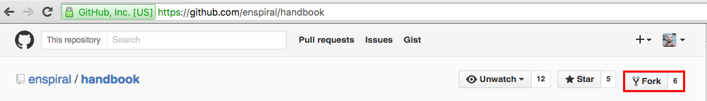
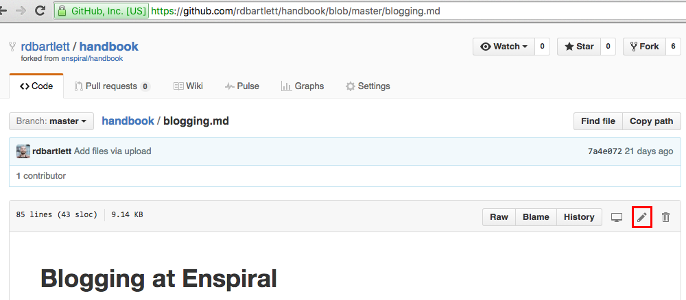
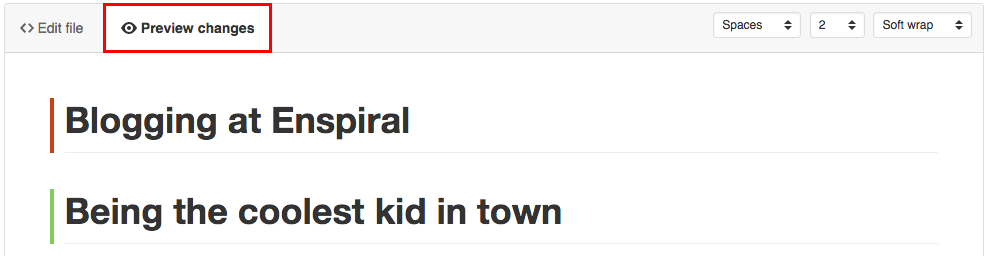
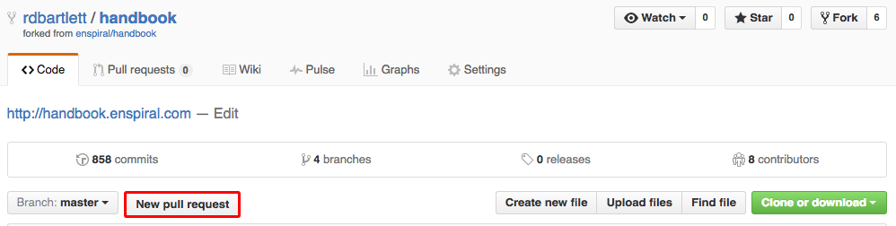
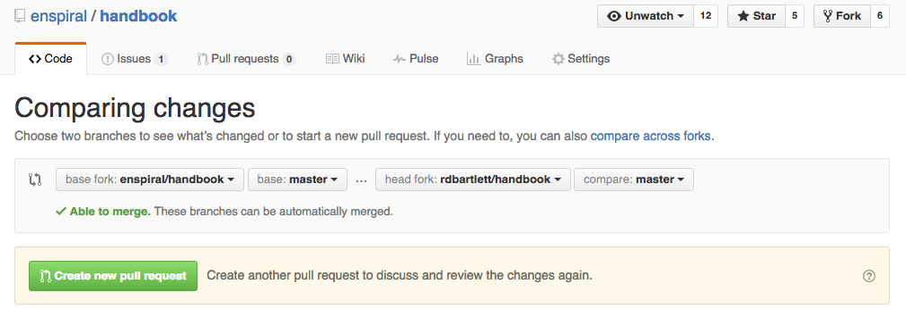

Introduction
updated
Enspiral is a network of people who support each other to do meaningful work.
Or at least that's one way to define what Enspiral is. Check out our website for more context. You might also be inspired by our blog Enspiral Tales and this video created at Enspiral Summer Fest 2018.
Our monthly newsletter is a great way to receive updates from our network.
About This Handbook
This Handbook's primary audience is Enspiral members, but it will be publicly available for others who might find it useful. The goal is to give everyone in the network as much clarity and context as possible, while sharing our structures and practices with the outside world as well.
Our handbook is designed as an always relevant living document. The handbook is constantly changing, and certain links point towards internal documents which contain the most up-to-date information. If you see something that could be improved: that's your invitation to improve it! Find out more about editing the handbook.
Structure
The book is broken up into chapters and sub-chapters. The chapters are:
- Agreements are the official legislation that governs the Enspiral network. Changing these requires a formal process.
- Guides explain in practical terms how we do stuff, for example what communications tools to use and how to navigate the experience of being a newcomer. Any Enspiral Contributor can change these.
- Nodes lists formal subgroups within our network
- Working Groups are where we do work on the network.
- Enspiral Foundation - the central node in the network. The Board, Ops Team, Comms person, and Ventures all have some formal arrangement with the Foundation, which is owned by Foundation Shareholders.
- Money - a lot of what makes Enspiral special is how we deal with money. Read more about those processes in this chapter.
- Ventures - the companies started from the network.
- Resources - a list of useful links
- Archive compiles outdated info from previous iterations of this handbook for future reference.
Copyrights
All the content on this site is published with a CC-BY-SA license. So please use it however you like without asking permission: just give credit, and use the same license for derivative works.
Contact
Reach out via: foundation@enspiral.com

Agreements
Agreements are documents which define important processes at Enspiral. They are the legislation which govern the rules of how we operate. The process for creating and changing Agreements is defined in our Decisions Agreement.
Board Agreement
Context
This agreement sets out the roles and responsibilities of the Enspiral Foundation Board and the powers granted to the Directors of Enspiral Foundation Ltd. As a registered limited liability company, Enspiral Foundation Ltd is legally required to have a board of directors and a chairperson.
Enspiral’s goal is to distribute vision, strategy, and leadership as widely as possible in the network, so our approach is a light board, with a narrow focus.
Roles & Responsibilities
- Ensure Enspiral Foundation Ltd is fully compliant with New Zealand laws and regulations, and its company constitution.
- Maintain an overview of current finances, long term financial view, and adequate reserves (as defined in the Financial Agreement).
- Decide what kind of financial activity can go through the Foundation, and oversee activity in the Foundation’s accounts.
- Oversee all agreements between Enspiral Foundation Ltd and other entities (including Enspiral Ventures and external organisations), such as memorandums of understanding (MOUs - see definition), service contracts, fundholding arrangements, etc.
- Make recommendations about substantive decisions involving Enspiral Foundation Ltd and its assets, consulting with the shareholders and wider network.
- Report quarterly on its activities to the shareholders and wider network.
- Decide on the contents of Node Requirements using an Advice Decision.
- Approve new Enspiral Nodes and decomission inactive / rogue Nodes.
- Protect the Enspiral brand and ensure the Enspiral Foundation has ultimate control over Enspiral brand assets and social media accounts.
- Add / Remove members who are not part of a node to the network.
Selection & Composition
- Foundation Stewards and existing directors are expected to actively maintain a diverse board in keeping with the Diversity Agreement.
- Enspiral currently has no quota or strict compositional requirements of the board as we do not want to limit the spectrum of diversity considered.
Processes
Defined by the company Constitution:
- Directors not disqualified under the Companies Act can be appointed by the shareholders of Enspiral Foundation Ltd with 75% support.
- Directors can be removed by the shareholders of Enspiral Foundation Ltd with 75% support.
- There will be a minimum of 3 and a maximum of 8 directors at any one time.
- The Directors must elect one of their number as chairperson of the Board.
Further defined by this agreement:
- The board of directors will meet at least quarterly.
- Directors serve a term of a minimum of 2 years and a maximum of 5 years.
- Decisions about appointing and removing directors will be made in the Foundation Stewards Loomio group.
- Any Foundation Steward may nominate a new Director.
- All directors must become an Enspiral member, in order to have access and context on network activity.
- The Chair is selected by a 'paper, scissor, rock' process (best 2 out of 3), with the loser becoming the Chair of board for 12 months.
Emergency Powers
Under New Zealand law, the Board can take extreme unilateral action, a power Enspiral aims to apply only in rare emergency situations, such as the following risk areas:
- Financial bankruptcy or solvency risk
- Illegal conduct and legal disputes
- Extreme brand/reputation risk
- Breakdown of normal decision-making processes
In these cases the board has powers including liquidating the company, terminating contracts, disabling online platforms, commandeering funds, and any other actions the directors deem necessary to meet their legal responsibilities and allowed under the Companies Act.
Expectations
Directors will:
- Regularly participate in Enspiral's online and offline collaboration spaces, such as Loomio discussions, members meetings, and retreats.
- Make themselves available to answer questions and hear concerns from anyone at Enspiral regarding the Enspiral Foundation, and their roles and responsibilities as board members.
- Conduct themselves in a manner which upholds the values of the network and enhances Enspiral’s reputation.
Brand Agreement
{% hint style="info" %}
Brand WG is currently "inactive". Approval process in this agreement should be updated.
{% endhint %}
Note: this agreement is not about ‘branded Enspiral ventures’ or Enspiral associated ventures/companies. For now potential ventures go through the venture process. We have identified that that work needs wider input and alignment with the people working on clarifying Enspiral ventures.
This agreement is explicitly for anyone to use the Enspiral brand to align with their project, initiative, venture etc and get the right support and help they need to make it happen.
‘X by Enspiral’ can be used for things like… 'supported by, powered by, associated with, sponsored by...
Under this agreement to use the brand in this way all you need to do is:
(1:) Articulate your initiative by using this form
The purpose of this form is to act as a risk register and ask some reflective questions that further the thinking of the person behind the project, whilst providing some rigour of thinking to people outside of the project.
(2:) Gain approval from 3 members of the working group.
This will require you to reach out and chat about your idea with at least 3 people in the Brand Working group. It’s a good chance to circulate your idea in the network, gain momentum for it and also get valuable feedback to see risks, issues and opportunities you might not have seen yet.
When you’ve got this crew behind you, you can go for it and use the brand on your amazing, innovative, risky-as-hell or safe-as-houses new 'Supported by Enspiral' project.
If you fail spectacularly and publicly, you'll have our support. Innovation is messy - and running with clear intent and failing is a great thing. If you succeed, awesome. No doubt the network will continue to support you.
{% hint style="info" %}
If you're looking for specific on how to use Enspiral Logo and Brand, check out this document.
{% endhint %}
Catalyst Agreement
{% hint style="info" %}
At the moment Enspiral has no active Catalysts. However, this social technology developed by Enspiral is still relevant in creating impact in the world. If you want to learn more about the role of the catalyst, here's an interview with our ex-catalyst Joriam, exploring the role the Catalyst plays inside a network.
{% endhint %}
Context
In chemistry, a Catalyst is an agent of change, used in small amounts relative to the reactants, which reduces the amount of energy required to create a reaction, and activates the rest of the system without itself getting consumed.
With Catalysts at Enspiral, we are attempting to take the function of executive leadership, share it across multiple agents, and cycle many people through the role under a set time limit. The goal is to maintain a rhythm of evolution at Enspiral by inviting contribution, participation, and action, whilst reducing the friction people encounter trying to make changes and improvements.
Roles & Responsibilities
As leaders, Catalysts are responsible for defining and managing their own work. The specific functions below are intended to only occupy a small fraction of a Catalysts committed time, with the rest spent on their self-directed work programme.
Support Working Groups and Make Their Work Easier The primary responsibility of Catalysts is to catalyze working groups and help them be more productive. This can involve activities like strategy setting, co-facilitation, conflict resolution, fund raising and recruitment. Catalysts exist to support the work, not do the work.
Interface Between Working Groups and the Network Catalysts are a focal point in the attention economy. They are responsible for maintaining a list of active working groups and ensuring their activities are communicated succintly to the wider network. They are also responsible for supporting people who wish to join working groups find somewhere to contribute.
Maintain a Prioritised Network Improvements List
The Improvements Board is the catalysts responsibility. They are responsible for keeping it up to date and ensuring that working groups activity is clearly represented and that ideas for new improvements are frequently reviewed and considered.
Hold Working Group Rhythms Catalysts are responsible for facilitating key rhythms and decisions for the ecosystem of working groups as a whole.
Processes
Appointment
The Catalyst support working group is responsible for selecting and supporting catalysts.
Resourcing
The Catalyst support working group is responsible for raising funds through cobudget or other means to fund on-going catalyst work.
Expectations
Each Catalyst will have their own style of leadership, and diverse approaches are strongly encouraged. However, there are some guiding principles we expect all Catalysts to follow.
- Gentle - exercise power with others, not over others.
- Firm - hold people to their commitments, especially yourself.
- Selfless - subsume your personal motivations to those of the group.
- Kind - care for the people, care for yourself. Ask for and offer support.
- Ambitious - aim for high standards in both yourself and others.
- Inclusive - consistently create opportunities for all kinds of people to engage.
- Catalysing - consciously develop leadership capacity in yourself and others.
- Holistic - regard the bigger picture, the longer term, and the network as a whole.
Decisions Agreement
This agreement defines how formal decisions are made at Enspiral. It identifies a number of different types of decision-making protocols, and describes processes for participating in formal decision making.
Context
Enspiral is a network of highly autonomous individuals, teams, and ventures. As much as possible, we encourage people to make decisions for themselves.
Enspiral is also a network building shared commons, and pursuing shared aspirations, that call for collective agreements and commitments. There are a variety of situations where it is useful or necessary to make a formal decision as a group.
Decision Protocol: Consensus
For formal decisions, Enspiral uses consensus decision-making, a methodology with a specific meaning and practice. Consensus does not mean unanimous agreement or engagement from everyone on all decisions. The key concept is consent (you can live with it), which is distinct from agreement (it’s your preference or first choice).
Agreements
Formal decisions with everyone are only intended to be used when they will have significant impact on the wider network. This Decision Agreement is the core agreement from which all others derive their mandate.
In order to enable efficient decision-making, provide clarity to participants, comply with laws, and protect the network, certain formal decisions are delegated to specific people, groups, or processes other than a consensus decision. This delegation is an Agreement and they are documented in our Handbook. Decisions to change existing Agreements or create new ones are made by everyone in the network together.
Decision Tool: Loomio
At Enspiral, formal decisions are made using a software tool called Loomio, which helps groups make collective decisions using constructive deliberation. This process is based on the principle that diverse perspectives can be synthesised to achieve better solutions that work for more people.
While making use of other channels (online and offline) to enrich input into a decision is strongly encouraged, the results on Loomio are considered the official outcome. This is so that we can keep a clear record and archive, and to ensure that everyone who desires to participate in a given decision-making process has the opportunity to make their voice heard.
Not every Loomio proposal constitutes a formal decision. Many Loomio proposals are created simply to gauge interest or share information. For the purposes of this Agreement, a “formal decision” is a clearly worded Loomio proposal seeking a specific mandate on behalf of the network.
Making Formal Decisions
Anyone can propose a formal decision at any time. We seek open, transparent decision-making and strive to enable the people who are affected by a decision to participate as fully as possible in making it. tries to make decisions with the widest possible circle of participants, while recognising the necessity and wisdom of delegating responsibility for certain decisions.
A formal decision is only required whenever there is a significant impact on the network. It is difficult to specify exact criteria for every case, so everyone is encouraged to use their best judgement to balance exercising autonomy with gaining shared understanding.
Formal decisions are needed for the following areas (some with the whole network, some with a subset of people or by a process which has been delegated by an Agreement).
- Agreements - creating new rules about how Enspiral works
- Brand - using the Enspiral's logo and identity publicly
- Money - spending collective funds or for actions that impact our financial outlook
- Tools & Processes - how the network as a whole will work and communicate
- Relationships - commitments as a network with individuals or entities (such as invitations to membership, appointing directors, MOUs with ventures or other entities)
- Buy-in & Awareness - when seeking a shared sense of ownership and support from the network as a whole
Decision Types
This agreement sets out the types of consensus decision making protocols that are used within . These protocols are named here so they can easily be referred to in other Agreements and contexts, and people can consider which is most appropriate for the situation.
The default for all formal decision making in is the Standard Decision.
| Type | Passing Criteria | Engagement Threshold | Minimum Timeframe | Description |
|---|---|---|---|---|
| Standard Decision | Passes as long as there are no blocks | None | 3 working days (5 working days encouraged when possible) | This is the default option and is used for most decisions at Enspiral. It ensures that no one strongly opposes a course of action, while allowing progress to move forward. If there are a large number of “no”s, it’s strongly advised to work on another iteration to find a better solution, but the proposer may move ahead at their discretion. |
Additionally, we have other types of formal decisions for specific circumstances. When using any of the decision types below, it must be clearly specified in the proposal.
| Type | Passing Criteria | Engagement Threshold | Minimum Timeframe | Description |
|---|---|---|---|---|
| Significant Decision | Passes as long as there are no blocks and more than 50% of those stating a position agree | None | 5 working days (10 working days encouraged when possible) | This option should be used for more consequential decisions, such as changes to Agreements. |
| Quorum Decision | Passes as long as there are no blocks. | Requires at least 75% of all eligible voters to agree or abstain (meaning at least ¾ of all group members must participate) | 5 working days (10 working days encouraged when possible) | This option is used when a Special Resolution (as defined in the Constitution is required |
| Emergency Decision | Passes even if there are blocks, but requires 75% of those stating a position to agree | None | 10 working days. If faster action is required, the board can exercise its emergency powers. | This option is a safeguard when the normal decision making processes fails. This option is only used in specific circumstances where a minority block would be destructive, such as removing a member, contributor or venture from the community or a role. |
| Advice Decision | Quorum Decision of decision makers | See Quorum Decision above | See Quroum Decision above | An advice decision must define the decision makers who have the power to make the decision after they have sought the input and feedback of those affected by the decision. |
Discussions & Proposals
Loomio decisions are generally preceded by a Loomio discussion. It is recommended to allow space for open discussion before starting a proposal, to give people an opportunity to be actively involved in shaping the context of the decision, and to share relevant information and opinions.
Any participant can raise a proposal, which describes a clear course of action or resolution. Once a proposal has been created, participants are asked to state a position.
| position | meaning |
|---|---|
| YES | You’re happy with the proposal. |
| ABSTAIN | You’re happy for the group to decide without you. |
| NO | You think there might be a better alternative, but you’re willing to go with the group’s decision. |
| BLOCK | You’ve got serious objections and you’ll be extremely unhappy if this proposal goes ahead. |
Blocking
At Enspiral, a single block is sufficient to stop a proposal proceeding in most cases. This places a considerable responsibility on someone blocking to deeply consider their choice, and on everyone involved to respect the right to block and to work toward a resolution.
A decision to block should not be taken lightly, but if you feel strongly about an issue and really want to stop a proposal you actually need to block it, because simply disagreeing or arguing against is not a guarantee that it won't be passed.
Blocking Policies
- Place the good of the whole group above your own individual preferences.
- You are not required to propose an alternative solution to raise a block, but you must articulate the nature of your block clearly so the group can understand the concern and work toward a resolution.
- Simply vetoing a decision is not considered a responsible use of consensus blocking - you must be prepared to work collaboratively to try and reach a resolution, make time for conversations, and to help others understand the issue.
- Blocks should only be used in cases where the blocker genuinely believes there is a significant risk of harm to the network, or that the proposal contravenes the fundamental values of Enspiral.
Decision Culture & Practice
While this document defines our formal decision making protocols, the effectiveness of our decision-making practice depends on our collective culture. The following principles have been found to be helpful in supporting formal decision-making at Enspiral.
Your Participation
- Share your genuine and honest views and opinions.
- Be succinct and clear in your communication.
- Modulate the volume of your contributions to leave space for equitable participation from others.
- Practice empathy and ask questions. Listen to understand, not to find fault.
- Actively engage in order to help the group make progress.
- Be prepared to have your mind changed - don’t be overly attached to your ideas.
- Consciously embrace diverse perspectives to reveal blind spots.
- Ask for help if you are not adequately engaged or don't understand an issue.
Enriching Engagement
- Open multiple channels to get well-rounded input (not just Loomio, not just online).
- Involve people who are not in your geographical location and those you do not work with regularly.
- If you encounter tension, conflict, or confusion, escalate communication to a higher bandwidth channel (Loomio to chat, chat to video, video to one-on-one, one-on-one to mediation by a third party), and then report outcomes back to the group.
- Take considered acts of facilitation to improve the experience of the group overall (examples: inviting in those we have not yet heard from, clarifying and summarising points raised, suggesting good timing for a proposal, etc).
Diversity Agreement
Enspiral is committed to developing and fostering a culture of diversity within an equitable workplace where all people are respected and valued. Enspiral will take active steps to reflect the diversity of the communities it works in. This policy provides a framework to which all other policies should align. It provides direction to everyone at Enspiral.
Enspiral will better reach its overall goals if it is successful in systematically identifying and removing barriers to full participation in all aspects of our work. Increasing diversity has been consistently shown to help business succeed. It is essential for reaching both our financial and social goals.
Enspiral will:
- be guided by the principle that equity means more than treating people in the same way; it requires special measures and the accommodation of differences.
- advocate for learning and development opportunities to raise awareness and build understanding of equity and diversity in practice.
- not tolerate discriminatory behaviour, such as harassment, name-calling, and disparaging jokes, and will take responsibility for appropriately addressing such incidents.
- include a commitment to diversity in the selection process for who we bring into our community.
It is the responsibility of everyone at Enspiral to ensure that we uphold its principles of equity and diversity in all its practices.
Email Accounts Agreement
- Any Enspiral member who has been a member for more than a year is entitled to an @enspiral address.
- They pay an additional annual fee to the foundation which is set by the board. See the current cost at the Email accounts guide
- Any Enspiral member with an active subscription (full or subsidized) can keep their email address regardless of how / when they received it.
This agreement was formed through the Assembly Sprint | April 2019 via this Loomio thread
Financial Agreement
Context
This agreement defines how Enspiral handles money as a collective, specifically the funds in the accounts of Enspiral. Our goals are to ensure legal compliance, financial solvency, and operational reliability, make financial flows across the network as transparent as possible, and direct significant resources to discretionary funds to be decided through participatory processes.
Type of Funds
Money held by the foundation falls into the following two categories.
Core Fund
The core fund is controlled by the Foundation Board. These funds are flagged for operational expenses and providing an economic runway for Enspiral.
The board is expected to maintain a viable level for the core fund account (e.g. minimum of 12 months of fixed expenses) and to periodically allocate any surplus to the approved collaborative funding processes of their choice.
Collaborative Funds
Funds allocated to an approved collaborative funding process governed by the rules that define the specific process.
Income
Enspiral receives income from individuals, companies, trusts or other entities. Income can be broken into the following categories:
Gifts
All one-off gifts to the foundation go to the core funds.
Membership
Except for membership fees collected directly by Enspiral Nodes, all recurring membership fees are considered global memberships and go to core funds. The board is responsible for setting global membership fee levels and processes via the membership fees guide.
Sponsorship
A recurring sponsorship with Enspiral. All sponsorships have a written memorandum which outlines the terms of the sponsorship and where funds are allocated.
Sponsorship monies can be allocated to any fund, as defined by the sponsorship memorandum.
An agreement (in the form of a memorandum) with the Enspiral Board and the sponsor. The Board will sign off on and maintain a record of all memorandums.
Other income
All other income is allocated to core funds.
Outgoings
Money spent by the Foundation falls under the following categories.
Fixed Costs
The board is responsible for managing the fixed costs of the network from core funds, which are expected to be kept at ‘minimum viable’ to ensure smooth operations of core processes for the network.
Discretionary Costs
All discretionary costs are managed through an approved collaborative funding process and taken from collaborative funds.
Emergency Costs
The board can approve one-off expenditures from any fund when exercising their emergency powers.
Collaborative Funding Processes
A collaborative funding process must have a facilitator who takes responsibility for the process. Specifically the facilitator is responsible for:
- Ensuring the rules for the process are clearly documented and approved by the board
- Budgeting for the process, including themselves running the process.
- Facilitating the process
- Reporting the outcomes to the network
- Holding entities that receive funding accountable
Funds may only be allocated to a collaborative funding process that has clearly documented rules that have been approved by the board. If no such rules have previously been defined, a proposal must be made to the board and approved.
Overall Compliance & Reporting
All financial compliance is managed at the discretion of the board. The board will provide a periodical financial report on Enspiral's funds/accounts balances and budget/financial forecast.
Foundation Stewards Agreement
Any Enspiral member who has held their membership for more than one year can become a Foundation Steward.
Any Foundation Steward can request a formal share of the Enspiral Foundation.
The board is responsible for issuing shares to Foundation Stewards and will do so promptly unless doing so would cause legal or financial challenges for the foundation (e.g. more than 25% of shareholders being outside of New Zealand, or the number of shareholders growing so large we need expensive audits or legal advice).
If the board is unable to issue a share they will maintain a waitlist and issue shares on a first in, first out basis.
The intent is for each Foundation Steward to have an equal voice in shareholder resolutions, regardless of whether they own an actual share or not, and the shareholders are expected to vote in line with the wider Foundation Stewards group.
Foundation Stewards are expected to
- actively participate in discussions about shareholder resolutions
- steward the foundation in the best interests of the Enspiral network as a whole
- promptly communicate with the ops team and the board as requested
Formal shareholders are expected to
- notify the ops team when their residency or tax situation changes
- relinquish their share if keeping it would cause legal or financial problems for the foundation
- vote in line with the wider foundation stewards group
- very promptly sign documents when requested by the ops team
A note on numbers
The foundation stewards group are the ultimate power holder when it comes to determining the actions of the Enspiral Foundation. They have the power to rewrite the constitution, appoint the board of directors and control the Enspiral brand and money. It is important that this role is accessible to anyone who wants that responsibility and we have a wide and diverse group of stewards.
Also, the more formal shareholders we have then the more work there is for the ops team and the more unwieldy it becomes to manage. We have not placed any limits on the numbers of shareholders, or significant barriers in the way of people stepping in to this role and trust individuals to make the call on whether to request a share or not.
If you think the value of having your voice in this group is worth the administrative cost to the ops team of managing your share then step in. Likewise, if you feel like this group is working fine without your input, feel free to step out.
Harassment And Abuse
Note: If you currently feel unsafe in Enspiral's communication channels, please immediately e-mail foundation@enspiral.com .
If you or someone you know is in immediate danger, seek local law enforcement.
Be mindful of the damage which misunderstandings and misleading personal accusations can create. However, if you think you've been seriously harmed by any of the following behaviors, we encourage you to use the Conflict Resolution Guide to address the issue, or report a complaint to authorities.
In serious cases if you are found to act in ways prohibited by this agreement you may be asked to leave Enspiral through a formal proposal as per our Decisions Agreement.
Warning Signs of Harassment or Abuse
- Threatening or inciting violence towards any persons or groups
- Deliberate intimidation
- Unwelcome personal attention
- Unwelcome sharing of private information
- Unwelcome sharing of private communications, except to report complaints
- Jokes related to gender, gender identity and expression, sexual orientation, disability, mental illness, neuro(a)typicality, physical appearance, body size, race, or religion
- Jokes regarding a person's lifestyle choices and practices, including those related to food, health, parenting, drugs, and employment.
- Gratuitous or off-topic sexual images or behaviour
Reporting Concerns and Complaints
Our Conflict Resolution Guide can be used to address all specific concerns and complaints. Additionally, our Decisions Agreement allows Enspiral participants to be removed by formal proposal. Such proposals are strongly recommended in any well-evidenced claims of harassment or abuse. If you find yourself in a situation where you have pursued all the options available here and your concern is yet unresolved email foundation@enspiral.com.
If you have a complaint made against you, you will have access to the same Enspiral resources as the accuser. Please use the Conflict Resolution Guide and related resources.
Our stance against "victim-blaming"
In all shared activities, and especially in cases of unwanted personal attention, Enspiral stands for relationships based upon the active ongoing consent of participants.
All Enspiral participants are expected
to support our personal rights: freedom of expression, freedom from discrimination, and consent-based interactions.
Related Agreements
Related Guidelines
Conflict Resolution Guidelines
Enspiral Nodes Agreement
An Enspiral node is a formal subgroup of Enspiral that has the power to manage their agreements, processes and finances independently.
The Foundation Board is responsible for creating and maintaining the Node Requirements (below) which are required to outline the requirements for starting, running and closing a node.
The Foundation Board has the power to approve requests for new Nodes and dissolve inactive / rogue Nodes.
Node Hosts
Each node is expected to have at least two node hosts who are responsible for communicating with the Foundation Board and the wider network.
Joining / leaving process
A node has the power to invite a new person to join Enspiral. Each member of a node is automatically a member of the global network.
A node also has the power to force one of their members to leave the network. While this power is expected to be used infrequently it is an important safeguard to protect the wider community.
Independent Finances
A node may have finances independent from the Foundation and receive all membership fees from their members directly.
A node may also opt to have membership fees go directly to the foundation if they do not want the overheads of managing their own financial infrastructure.
Multi-node membership
An Enspiral member may be part of multiple Nodes. Membership of multiple nodes is encouraged and such people act as important connectors in the wider network.
Node Requirements
The Board will update this agreement periodically with an advice process. This policy is a first iteration, if it hasn’t changed by Mar 2023 it is probably a bit stale.
Please talk to the Board early if you are considering starting a Node. When you’re ready to form a Node, fill in this form.
Nodes must:
-
maintain communication with the Board. Nodes must name 2 formal representatives who will be responsive to Board requests.
-
hold a gathering at least twice per year (online or in person). Members of other Enspiral Nodes must be welcome to join at least part of the gatherings.
-
maintain written documentation (e.g. handbook, wiki, shared doc), visible to the wider Enspiral network. Nodes inherits all Enspiral agreements, unless explicitly overwritten.
-
have a membership policy, e.g. who can invite someone to join? What is expected of them? On what grounds would they be asked to leave?
-
communicate with Enspiral Ops within 5 working days when a member joins or leaves so we can maintain our global member database and add them to our global communication platforms.
-
if financially enabled, Nodes must make finances transparent to the wider Enspiral network. Nodes are expected to charge members a subscription fee, though offering scholarships or subsidies where appropriate is acceptable.
-
ensure that all ownership and control over Enspiral branded domain names, trade marks, social media accounts is given to the Enspiral Foundation.
-
receive Board or Brand working group approval for any commercial use of the Enspiral brand except for running Enspiral gatherings.
{% hint style="info" %}
You can see current Enspiral Nodes here.
{% endhint %}
Personal Conduct
Enspiral's value resides in the people and the relationships that make up our inspiring, changemaking network. We collectively strive to foster an increasingly open, inclusive and caring culture. The Well Working Group will support this mission by developing network resources for constructive dialogue and co-working.
We ask all Enspiral participants to support these Personal Conduct Guidelines:
Respect diversity
We are committed to supporting social diversity and cultural sensitivity. Please support our Diversity Agreement in all interactions.
Communicate gently
Enspiral participants are expected to support contemplative awareness and nonviolent communication in our relationships. This is especially important in online communications. Please consider other perspectives in network-related activity.
Communicate effectively
Your voice is welcome. Your perspective is valued. Your interests are interesting. The best thing you can do to give and receive value is participate. Please consider reading our Comms Guidelines, especially the "Pick your Channel Wisely" section, to help express yourself effectively.
Discuss concerns and questions
If you feel uncomfortable or uncertain about Enspiral issues or processes, please identify your concerns. If they've already been identified in Enspiral Improvements or in active Loomio discussions, please join the conversation. If not, start a conversation which could help the whole network.
{% hint style="info" %}
The Enspiral Improvements Board is currently inactive.
{% endhint %}
Resolve conflicts inclusively
We commit to resolve conflicts inclusively using a Transformative Justice approach, aiming to strengthen community and to fairly recognize all serious concerns. We encourage all conflicts to be resolved with the fewest people necessary, again acknowledging that everyone directly affected by the conflict needs to be involved. Refer to our Conflict Resolution Guide which further explains this.
Mutual responsibility
We're all responsible, all of the time, to take positive action in response to harassment and abuse. In some instances, this may include reporting to external authorities. Enspiral expects all participants to take this responsibility seriously.
Related Agreements
Related Guidelines
Conflict Resolution Guidelines
Pods Agreement
This agreement is about how we distribute the support and care tasks in the network and replaces the former Stewardship Agreement in this respect.
Pods are small groups of people (4 to 5 is suggested) formed by people in Enspiral. Why Pods? It is important to distribute the tasks of supporting and caring for each other – and building relationships – around the network in a structured way. If you want to give and receive care in this network, then you have a responsibility to make that happen. Pods are one way in which the network is formally committed to supporting you in this. It's a good place to start, and this agreement ensures that a Pods Working Group will exist to facilitate that for you.
The Pods Working Group (Pods WG) is accountable for hosting the Pods formation process on a regular basis, once or more per year and communicating updates with the Network which could include status, progress and learnings.
For information about how we implement Pods, see the Pods Guide.
Loomio thread for this agreement.
Related Agreements
- Working Groups
- Stewarding (archived)
Working Groups Agreement
{% hint style="info" %}
There are currently no catalysts in Enspiral. Formal WG approval process in this agreement should be updated.
{% endhint %}
Working groups are the way we build and maintain Enspiral, if Enspiral were a body, working groups would be the organs.
Types of Working Groups
There are three types of working groups: informal, formal and financially enabled.
Informal
An informal working group is the easiest to start, it requires no approval and only needs at least two members to qualify as a working group.
- Any two people can start an informal working group for any purpose they define.
- It can be for a short lived project or long term mission.
- The working group can set its own rules for who can join.
Formal
A formal working group is a more robust working group with additional powers and responsibilities.
- Catalyst approval is required to create a formal working group.
- Only formal working groups can be delegated responsibilities or powers in an Agreement.
Financial Enabled
A financially enabled working group is able to use the Enspiral Foundation Ltd as a financial and legal platform. They can use the company to receive, spend and hold money and enter into legal contracts.
- Board approval is required to create a financially enabled working group.
- Financially enabled working groups operate an autonomous business unit within the Enspiral Foundation Ltd.
Responsibilities and powers
All Working Groups
Be awesome, look after your members, do good work, have fun, clean up after yourselves.
Formal Working Group
Responsibilities and powers as delegated by agreement.
Financially Enabled Working Group
Responsibilities
- Create a budget and keep it up to date.
- Prepare and publish financial reports.
- Only enter into contracts that have been approved by the board.
- Work with the Enspiral Foundation book keepers to keep its accounts in order.
- Provide information requested by the board or Catalysts in a timely manner.
- Don’t create extra work for Catalysts.
- Don’t create headaches for the board.
Powers
- Enter into (pre-approved) legal contracts on behalf of the Enspiral Foundation.
- Receive funds from collaborative funding processes directly to its business unit.
Catalysts
Catalysts are the friendly gatekeeper for formalizing a working group.
Responsibilities
- Catalyse a healthy working group ecosystem.
- Maintain an up to date list of all working groups.
- Create and publish criteria for being a formal working group.
- Periodically conduct health checks of all working groups.
- Support and train financially enabled working group members to use Enspiral Foundation systems and processes.
- Act as a backstop for financially enabled working groups and intervene at the boards request if they are disbanded.
Powers
- Approve / reject requests to become a formal working group.
- Disband a dysfunctional formal working group.
Board
The board is the friendly gatekeeper for financially enabled working groups.
Responsibilities
- Ensure the Enspiral Foundation systems and processes are able to accomodate financially enabled working groups.
- Create and publish the criteria for a financially enabled working group.
- Approve / reject legal contracts for use by financial enabled working groups.
- Ensure each financial working group is solvent and any mismanagement does not impact other working groups or core funds.
Powers
- Approve / reject requests to become a financially enabled working group.
- Disband a financially enabled working group and appoint someone(s) to unwind the business unit.
Guides
Guides explain in practical terms how we do stuff. Any Enspiral Contributor can change these.
Assembly Sprint
What is an Assembly Sprint?
Assembly Sprints are for organizing the most important discussions and decisions for this season into one place for us to have our say and move the network forwards. Your voice matters, and we invite you to bring your gifts to bear on our collective potential, unfolding the value of our collective, its resources (even its agreements, protocols, tools and shared understandings) and its current and future relationships.
The Assembly will typically involve a number of Loomio discussions and some community gatherings (sychronous meetings over video calls and in person when possible). Imagine months of Enspiralling concentrated into two weeks to help a bunch of conversations and proposals move forward.
Assembly Sprints will concentrate discussions and decisions—those that may have wide ramifications for many Enspiral stakeholders—over a period of (typically) two weeks, scheduled well in advance, for the purposes of inclusion, accessibility, transparency, and better synergising collective attention & efforts.
All Enspiral members are able to participate and have blocking power if they commit to the Assembly Sprint.
Process Guidelines
First, [eg. 2-3 months in advance], we would invite public submissions of concrete and/or specific proposals or topics where we imagine we’ll need to make a decision in the next year.
Then, [eg. 5-9 weeks in advance], the Assembly Working Group would use advice process to elect the decision-areas that are on the agenda—to be moved towards action during the time-boxed, asynchronous Assembly Sprint. [At least a month in advance], the Assembly Working Group will notify the network of what’s on the agenda for the particular dates, and will make an invitation for people to commit/ sign up to participate in the two week endeavour.
Then, it's time for Assembly Sprint!
More on Why/ Background
Decision-making 'assembly' sprints—if run regularly, a few times a year—could increase accessibility, supporting more people to be able to participate in shaping the network as their intrinsic motivation calls them to. By picking a short and specific time period (typically 2-4 weeks) several months in advance, and choosing which decision-areas are on the agenda, we can grow everyone's capacity to voice their values and share their wisdom on the issues that matter most to them.
Hopefully, this will result in conditions of more coherence, transparency, and accountability in the process of decision-making that affects our Agreements, and will give each of us an opportunity to indicate the commitment that feels right for a given set of significant (or substantial) decisions in a given season. @joshuavial outlined this approach in his document, 4 Worlds (link → relevant header), which you may have seen posted after the Members' meeting before last.
You can read more in this thread from Assembly Sprint 2018 documenting the initial Assembly proposal, and the more legible text/ iteration inviting participation in the inaugural 2018 Assembly Sprint.
Assembly Sprints Documentation
- 🎙 Here's a conversation about Assembly Sprints with our ex-catalyst John Gieryn.
2021
Assembly Sprint 2021: Minimum Viable Revolution
The time feels ripe for an assembly sprint - scoping the Assembly Sprint and providing historic context
2020
2020 July closing notes and retro
2019 November Assembly Sprint report
2020 July decision and agenda formation
2019
2019 November Assembly Sprint report
Assembly Opt-in and Agenda announcement for 11 Nov. 2019 Sprint
Decision to run the March '19 assembly (and the initial one)
2018
All Retro Comments and some Metrics and synthesis — (inaugural) 2018 Assembly
Decision to run the first Assembly Sprint (and the second)
Blogging
As a member of Enspiral you are encouraged to share your experiences through our publishing platforms:
- Enspiral Tales on Medium
- Enspiral Podcast on Youtube
- Better Work Together Blog - contact Ants for more info
🎙 Here's a conversation about blogging for Enspiral and writing online with Rich Bartlett.
Context
During the original Catalyst experiment, Gina started Enspiral Tales - a Medium collection for blog stories written by Enspiral people.
Rich followed up with the “Fairy Blog Mother”. This was a bucket of money that anyone in the network can contribute to. Rich arbitrarily handed out money to people for writing, editing and illustrating blog posts. Creating Enspiral Content has been also funded in October '22 Cobudget Round.

Content
The content is diverse. We don’t need to have a strong editorial opinion about what kind of content to publish, as the internet decides what is interesting. Here’s some of the kinds of posts that seem to do well.
Decentralised Leadership
Between us we’re learning a lot about decentralised leadership. Alanna Krause writes about it, Jessy Kate Schingler writes about it, Richard D. Bartlett writes about it, and so does Susan Basterfield. These pieces are really valuable to people trying to follow in Enspiral’s footsteps.
Vision conjuring
Some people do big epic visionary change-the-world pieces like Joshua Vial’s Hacking Capitalism with Capped Returns and Edward West’s piece announcing the Collaborative Technology Alliance. These are the kind of pieces a community can grow around.
Experience sharing
Some people share their experience of being in Enspiral, which is really helpful context for new folk. See Pete Jacobsen’s Baffling Journey Into Enspiral or Hailey Cooperider’s reflections from her first Enspiral retreat, Vivien Askey’s interview with Jack Tolley, Chloe Waretini’s reflection on the first Catalyst experiment,
Practical lessons
Then again some people share more practical lessons like Mix Irving’s Teaching in the Spiral: Less Lecturing, More Co-creating, Chelsea Robinsons’s Feedback Feast, Theodore Taptiklis’ on Capturing a compelling story and James Kiesel’s piece on remote working and Sam Rye on the essential tools in your Startup Stack. The internet loves practical guides like this!
Reflecting on events
Blogging is a great way to digest events, e.g. Richard D. Bartlett’s epic summary of the Democratic Cities conference in Madrid, Silvia Zuur’s review of Bioneers, Tracey Ambrose’s review of OuiShare Fest, Alina Seigfried’s piece about Michel Bauwens’ visit to Wellington, and Derek Razo’s schemes after POC21 as the event morphed into a community.
Events are easy to write about, and they tend to get a good level of attention because you can share them on the event hashtag. Event participants are often eager to read the reflections of other attendees.
Editing
There’s no formal editorial system in place.
Anyone can write a piece on Medium and submit it to the publication for review. Technically, Rich, Alanna, Chloe, Derek, Seb and Gina have “editor” permissions so can approve or edit any submitted post. If you want your name on this list, talk to Rich.
Practically, Rich has the strongest editorial oversight - chat with him if you’re thinking of a post but not sure if it fits, or want any kind of encouragement. If you don’t know where to start, this short story about writing the minimum viable post might help. He’s currently operating on the principle that more contributors is good: let’s all get in the habit of sharing our lessons in public! Right now he's particularly interested in sharing stories about the challenges and tensions of working in this way, but you might be interested in something completely different and that is cool too.
Licensing and syndication
Licensing is up to you. Medium allows you to choose a license, whether you want to reserve all, some, or no rights. This article might help you choose. If you don't actively choose a license, you're effectively giving up all your rights to Medium.
If you choose a license that allows people to share your work, it can get reposted elsewhere. This is great to expand the reach of our stories. E.g. Shareable and P2P Foundation both reposted Rich’s Bossless Organisations piece.
If you want to make it easier on the editors of those publications, it’s helpful to publish a raw Markdown or Html version of your post somewhere. For example, see how Rich did that at the very end of this post.
Impact on the original experiment
The results have been great: about 40 people have written stories, growing the publication to 2800 followers, getting about 5-10k hits in a month. Here's a summary of our all-time views:

And our most popular stories to date (updated Jan '19):

Resources
- Unsplash: free high resolution photos
Conflict Resolution
a.k.a. Restorative Justice Guidelines
Enspiral's value resides in the people and the relationships that make up our inspiring, changemaking network. We collectively strive to foster an increasingly open, inclusive and caring culture. The Well Working Group historically supported this mission by developing network resources for constructive dialogue and co-working.
In this document you will find three suggested steps to take to safely and appropriately resolve conflict. Also included are support mechanisms if you need additional input to help resolve the conflict.
Note: If you currently feel unsafe in Enspiral's communication channels, please immediately e-mail the board at foundation@enspiral.com.
If you or someone you know is in immediate danger, seek local law enforcement.
We ask all Enspiral participants to recognize these network safety guidelines for resolving serious conflicts.
If you are in conflict with someone else consider taking these three steps:
1. Contemplate Conflict
- Take time to process your experiences if you feel confused, overwhelmed or agitated.
- Note uncertainties and possible misunderstandings in your interactions, including cultural differences.
- Distinguish people's actions from your feelings about them. They're both important, but they're different.
- Distinguish disagreement from personal hostility. We're allowed to disagree, dissent and discuss.
- Review relevant documents and Conflict Resolution Support.
If you've contemplated the experience and have decided it feels like it may be harassment or abuse, please consult our Harassment and Abuse Policy.
2. Invite Conversation
If you're unable to resolve a conflict on your own, invite conversation. The sooner the better.
- If you feel able and safe to, directly discuss your concerns with the person you are in conflict with.
- Otherwise, see Conflict Resolution Support.
- Consider your communication approach; Comms Guidelines might be helpful.
- Ensure a mutually agreeable time and place for conversation, including adequate privacy.
3. Develop a Plan
- Foster inclusive dialogue by sharing ideas, asking clarifying questions, and responding to others' ideas.
- Identify personal wants and needs.
- Make offers or requests.
- In complex conflicts, develop points of agreement to facilitate progress.
- Propose plans to treat conflict in a mutually satisfactory way.
- Mutually sign written plans in serious cases, or whenever desired.
- Follow up later to discuss progress.
Conflict Resolution Support
Again, if you've contemplated the experience and have decided it feels like it may be harassment or abuse, please consult our Harassment and Abuse Policy.
Each of these support stages may be pursued separately or together.
How do I know when to enlist more support?
The time to escalate is when you've been trying to work at one level and you reach an impasse, both parties unable to compromise in any way.
For example, if you have a 1-1 meeting with reasonable, clear asks which become unmet requests, it would be at this point you might consider bringing a third party in to mediate.
There are four steps you might consider to reach a resolution, each step includes more people. The point is to resolve the conflict with as few people involved as possible.
1. Direct communication
Directly discuss your concerns with a conflicting person if you're comfortable doing that.
2. Private support
Talk privately to your trusted friends to help you resolve conflicts with other Enspiral participants. Make a plan together about what you're going to do.
3. Expanded dialogue
Enspiral participants may seek to informally resolve their conflicts by discussing them with mutually trusted Enspiral participants. This may be done either confidentially or openly.
4. Mediation
For intense conflicts, Enspiral participants may request mediation meetings which are assigned to trained, in-network (or external) mediators.
Our expectations are that a mediator is suitably qualified, costs incurred will be negotiated directly with the people involved. We commit to hosting a recurring bucket and—at the Enspiral Foundation's discretion—the use of reserves.
Related Agreements
Other useful materials
- Loomio's Conflict Resolution Process and resources
- AORTA - Conflict mediation in action
- AORTA - Conflict Resolution Worksheet
- Non-Violent Communication process (1-pager).
- Nonviolent Communication homepage
- Codes of Conduct: When Being Excellent is Not Enough
- Geek Feminism wiki
- Buffer's 10 values
- The FOSDEM Conundrum
- Facilitation Guide for Effective Conflict Resolution
- "Manifesto of Being and Working Together" from #OurField and Future Farm Lab
Comms Guidelines
Comms Guidelines
This guide is here to give an overview of the channels we've decided to adopt and to give you some tips for how best to communicate with the network.
These comms channels are hosted by the Enspiral Foundation and are open to all contributors (or wider). If you are a contributor but lack access to something, contact foundation@enspiral.com
Comms Platforms and Tools
Loomio - Group Decisions
Our tool for decision making and thoughtful discussions. By default, assume the whole network will see everything.
Posting on Loomio in the main Enspiral group won't necessarily alert everyone, but if you invite the whole group to a thread or to vote on a poll, Loomio will notify everyone (sending emails to any of our 200 people around the world, if they haven't changed their settings,) and so should be used judiciously. Big announcements can make a lot of noise if we overuse them.
Feel free to start subgroups on Loomio if you'd like a more targeted collaboration space with a subset of Enspiral people.
Enspiral Insider - Internal Newsletter
Every month, an internal newsletter goes out to all Enspiral contributors via private Substack. It compiles updates from the network, requests, offers, and showcases content created by Enspiral members, and other content that our members found valuable to share.
To get something included in the newsletter post on Slack (#enspiral-news is a good place, but we scan most popular channels, for example #watercooler). If you want to reach the whole network with non-urgent infomation, this is the way.
When you join Enspiral you should be added to the newsletter. If for some reason you are not receiving our internal newsletter, contact foundation@enspiral.com and we'll fix it for you 💜
We also have an external newsletter. There's no need to subscribe to both - internal newsletter has more info + links to our internal affairs.
Enspiral Chat - Daily Realtime Comms
Daily chatting, realtime comms, quick questions, interesting links. There is a ~town-spiral channel for general discussion, and many channels for teams, projects, locations, and topics, or you can create your own!
{% hint style="info" %}
If you'd have to pick ONE channel to join, it's definitely ~town-spiral.
{% endhint %}
Enspiral Chat runs on the Mattermost open source platform. Here's an Onboarding Guide to help you join the chat.
You can browse through, and join, all the channels by clicking the + button at the top left. Note that some channels are inactive.
Here's a list of popular Enspiral Chat Channels:
Locations
(particularly relevant if you're based around a specific place.)
- Europe
- Wellington
- Auckland
- Melbourne
- ...
Topics
- Cool-Shit - whatever you think is cool.
- Enspiral_Help - How do I enspiral?
- Enspiral-News - A channel to add in any links or news you would like to have shared in the next issue of Enspiral news. If there is important or useful context you would like included, please drop that in as well
- Enstagram - Like Enspiral-Instragam: a place we can share snapshots from daily life so it feels like we are hanging out together even when we’re all over the world!
- Thanks - expressing gratitude
- Want-Ads - enspiral classifieds + mirror of Enspiral Opportunities
- Watercooler - The primary channel for sharing cool stuff
Cobudget - Collaborative Funding
Our tool for budgeting and financial decision making. Enspiral's discretionary budget is distributed using a democratic process. All contributors are welcome to raise buckets (funding requests) and comment on buckets. If your message is about spending collective money, it probably makes sense to post it here as a bucket or comment.
Google Workspace
- Email - Everyone at Enspiral can pay a subscription fee to have an Enspiral email address if they need one to represent Enspiral to clients or the public. Email is great for one-on-one or small group correspondence, or one-way announcements. Here's the email accounts agreement.
- Calendar - Great for your own planning and for private events and meetings where you have a specific guest list in mind.
- Drive - We use Drive (Docs, Sheets, Forms) extensively. If a team you're working with uses Drive, you'll be invited to the relevant folders/docs.
Facebook - Casual Asynchronous Comms
- Public Facebook page - Updates, news, and links relevant to Enspiral followers. This is a one-to-many channel. To get something posted here, contact news@enspiral.com.
- Private Facebook group - A space for Enspiral contributors to share links, updates, ideas, and discussion. This is a many-to-many channel, where everyone can post and reply.
Blog & Content
Enspiral has a publication on Medium called Enspiral Tales and a youtube channel. We welcome content from anyone in the network. Find out more.
Comms Tips and Guidelines
We operate in an attention economy. Getting the attention of people at Enspiral is expensive! Here's some advice about making it count.
This is YOUR Space
We are all greatly enriched by all of our engagement. Your voice is welcome. Your perspective is valued. Your interests are interesting. The best thing you can do to give and receive value is participate.
Pick your Channel Wisely
Know the various channels available and consciously decide where to post. Within a given tool, post to the right group or channel:
- Topics requiring a group decision and affecting everyone go on Loomio
- Issues, improvements and general discussion go on Github
- Broadcast announcements to all contributors go in News
- Casual realtime communication goes on Slack. You will reach whoever opts in to read when you happen to post.
- Other casual communication goes in the Facebook group - again you'll reach whoever opts in there.
- Public info and links go on Facebook and Twitter
- Long form public sharing goes on Enspiral Tales
Messages relevant only to a limited group of people should be emailed directly, or posted in a specific Slack channel or Loomio subgroup.
Subject Lines
Put all the relevant info you can very concisely in the subject line (or discussion title on Loomio). Messages on Loomio trigger an email hundreds of people, many of whom will look no further than the subject line. Who, what, where, why, when.
Key Details in the First Message
Put all the relevant details in the body of the message, Chalkle event description, calendar invite, etc. You often only have one shot to reach people. Most will never click through to look at followup comments. Make sure the key info is in the initial post.
Include Links, Make it Easy
If you want people to click through to other content, include links! People will not go searching for facebook events, google docs, etc, on their own. Put everything they need right in front of people.
Tag Specific People
If a post is relevant to specific people, tag them (on Slack, Loomio, Facebook) to help them notice it's there. People will often respond directly to stuff they are tagged in, which can increase engagement. Don’t post a comment that is just tagging a name though - that means the person will get an email notification that simply says their name. You want them to get a message too.
Be Very Sparing with @Channel tags
In Slack, @channel or @everyone notifications will send notifications to everyone in that channel - please use this sparingly for very important or time sensitive information, especially in large channels. Don't use @channel in #watercooler unless it's something that literally affects everyone.
Get Permissions Right
If you’re linking to something on Google Drive (or any other site), make sure you check the sharing settings before you hit send! It’s very common to be given a link only to be told “you don’t have permission” when you try to view it. Most people won’t come back and try again, so get it right the first time.
Include All Context
Write every message as if to someone who has never heard of it before, especially network-wide messages. Don’t assume people already know any context, since your audience has diverse levels of engagement. We want invitations to engagement to be as accessible as possible. Be aware of Enspiral jargon and assumptions. Include links to relevant background info or previous discussions so people can catch themselves up.
Make it Count
Send out as few messages as possible, and use each one to the max. Consider how precious people’s time is. Our attention is a commons we share - if we start overusing it, we'll degrade it for everyone. Do a quick search to see if there’s already an existing thread on the topic before posting a new one.
Ask for Help
Realize that any time you’re communicating to large groups of people, you are doing comms work. If you’re not sure, or not very experienced with comms work, just check in with someone who can help you think through your message and how you’re delivering it to make sure it’s maximally effective.
Keep it brief
‘nough said!
If you'd like to learn more about digital engagement here's a deep dive conversation.
If you need help...
Contact foundation@enspiral.com or drop into the #enspiral_help channel on Slack
Contributing to the Handbook
Getting started
This Handbook is like a wiki, maintained by everyone in the community: we need your help! Enspiral Contributors: join the #handbook channel on Slack and we can support you to get started.
The Github Method
Github is a platform that is mostly used by developers to manage software projects: it allows many contributors to all work on a single project without stepping on each other's toes. It has a system for storing files and proposing changes to them in a managed way. (This is based on an amazing free technology called git.)
All the files that make up this handbook live in a Github "repository" (often called a "repo") : https://github.com/enspiral/handbook
Check the Github for Beginners guide if you want to learn more.
If you have a Github account, you can draft another version of the handbook and let people comment on your draft. You make a "pull request" to request that repo maintainers merge your changes into the canonical version of the handbook, the "master" version. If you don't have an account click here to set one up. Once you have an account, post your github user ID in the #enspiral_help channel in Slack and ask for someone to add you to Enspiral' github account.
To change an agreement you need to follow the process outlined in the decisions agreement. These agreements govern our community so they can only be changed with community input.
If you're making a small edit like fixing a typo, or adding a guide, the pull request is a good place to start.
Here's how to propose a change:
Watch the quick demo video, or read on:
Step 1
First, go to the enspiral/handbook Github repo (you'll need to be a logged Github user). Click "Fork" to make your own copy of the repo. It'll ask for a destination: just select your personal account.

Step 2
Now you're on your own version of the handbook. You can add files with "Create new file" or "Upload files". To edit an existing file, select it from the list, then click the little pencil icon near the top right.

Step 3
Now you're in a file editor, so you can make any changes you want. We're using markdown to add formatting, links, images, etc. You can see how this markdown formatting will render by clicking "Preview changes". Text outlined in red is the stuff you're proposing to remove, and green means you're proposing an addition. Hit "Commit changes" to finish editing.

Step 4
Once you've added and edited all the files required to make a useful change to the handbook, go back to your repo (click yourGithubUsername/handbook at the top of the page) and click "New pull request".

Step 5
This will take you to the enspiral/handbook repo, and give you a preview of the whole set of changes you are proposing. If it looks right, then click "Create pull request" and fill in a title and details for the pull request, so people know at a glance what is included. Finally, you need to click "Create pull request" once more, which will make your proposal final and notify the repo maintainers that you want to make a change.

Handbook Maintainers
Handbook maintainers aim to merge pull requests within 1-2 days. As a general guideline a maintainer does not merge in their own branches or pull requests. If they cannot get hold of another maintainer they may merge their own branches.
To improve communications and understanding, its useful for your proposed changes to reference an underlying issue that your changes aim to solve.
If you want to become a maintainer ask @joshuavial to give to maintainer rights.
Code to sync github and gitbooks
## prereqs
rsync
python3
git
gitbook-cli
in the md/ folder, run gitbook install
## Test
./serve.sh
http://localhost:8000/
git fetch origin
git checkout gh-pages
git merge master
./build.sh
## if you need better error messages, try gitbook build .
git add .
git commit -m "whatevers happened"
git push origin gh-pages
## if you need to make edits, do this on another branch.
## just use gh-pages to build the html version of the book
Improvements and Disagreements
If you think the content in the handbook is inaccurate or could be improved follow the process above to submit your own changes. The contribution process may reveal differences of opinion. In these cases, try to understand each others perspective. Consider starting a Loomio discussion to find agreement.
The Gitbooks Method
You can also edit the handbook using the Gitbooks Editor. If you know how to do that, why don't you go ahead and update this page to explain it to someone else :)
Updating the Table of Contents/Menu
You can update the menu by editing the SUMMARY.md file.
Previewing changes before merging a pull request
Gitbook automatically renders all branches on Github, so you can preview what a pull request will look like before merging it.
To do this, go to the Activity tab -> switch branch -> view latest build -> read online.

Gitbook build errors
If you are getting an error running gitbook build or gitbook serve you may need to fix one of the dependencies as outlined in this stack overflow issue
tl;dr - gitbook-cli is out of date and graceful-fs needs to be pinned to 4.2.0
Content dusting
Enspiral members and contributors create a lot of content. On Github, Google Docs and more.
In order to keep what we write up-to-date and consistent, we practice « content dusting ». That is, we keep an eye on the actual content we create through Github and Google Drive to identify the parts that become stale or lose relevance, and suggest amendments where appropriate.
Note: This process description focuses on Github and Google Drive dusting work right now. If you think similar work should be done on other platforms we use, feel free to edit/amend this document.
What's in with dusting?
This group exists as another means to provide easily accessible tasks to contributors who are having a hard time finding how to get involved at a practical level with Enspiral. Doing work that has positive impact for the network should not require specific knowledge about our governance practices or processes, and should also be workable for people who have low capacity or want low engagement.
Amending content and discussing with content authors are also means to directly connect to arguably the most important part of Enspiral - what gets done. By creating more direct collaboration dynamics, we envision that engagement in « working on stuff that matters » will naturally follow, and that durable cross-network connections will form between content dusting volunteers and content creators.
Getting started with content dusting
-
Step 1 - Find something stale - Find something in any of the Github repositories or Google Drive document that was authored a while ago and you think would be relevant to update. Github content dusting is mostly targeted towards the Handbook, but also other public facing content and software repositories. Google Drive has a lot of spreadsheets, legal paperwork, visuals and much more.
Let your skills and own perception of « stuff that matters » guide you towards the piece of stale content that you want to update.
-
Step 2 - Put yourself in the author's shoes - Before you even notify them that some of their previous work needs a rework, think of what you would do in their place to get things sorted. Make sure you understand what needs doing to an extent that will allow effective communication with the author.
-
Step 3 - Notify the author and take steps towards resolution - It's now time to notify the author of the issue you've found. If the content is in a Github file, find the original commit where this content was authored using these instructions, and place a Github comment on the relevant line. If it's on the Drive, just include a comment and mention the author and any other person you think should be notified. Your comment should ideally offer a simple solution to the issue and potentially request mandate to amend the author's work.
Github tip: You can use the
- [ ] itemnotation to create a checklist. This will allow you to list tasks that authors will be able give you mandate for by ticking the box. For trivial amendments that you think are not worth disturbing the author, go straigth to committing changes. -
Step 4 - Publish the changes - Acting upon your words and any clarification the authors gave, amend the content (e.g. by editing the actual files instead of comments on a Google docs, and by and commit your work on Github).
Github tip: Depending on the repository, it may be useful to use the
gittool to clone, create a new branch, commit, and then making a pull-request on Github. Reach out to the#content-dustingSlack channel for any assistance with this workflow. -
Step 5 - Follow through (but don't burn your wings) - Understand that the author may now be busy with other work, and may need to be reminded several times of the issue. We advice against insisting if authors state that the amendment should not be made. In that case limit the scope of your work to what is actually needed and received as help. Also be extra cautious of complex tasks that would get you stuck for too long. On these, limit step 3 to simple notifications/discussions and reminders, not the actual implementation of a solution.
You can see various examples of (so far Github-centered) content-dusting here (troubleshooting dead links), here (demystifying jargon in the board agreement) and here (updating the member list of the brang working group).
Discuss
The emergence of this group is discussed in this Loomio. Feel free to join and weight in your thoughts!
Email accounts
This guide covers instructions for Enspiral email's, account security, Google groups and Google Drive
To request or remove your account, fill out this form. If you don't meet the requirements in the Email accounts agreement, contact the Catalysts or reach out to foundation@enspiral.com .
What you need to know
- An account allows you to have all the normal google services hosted within Enspiral's Google apps domain. eg. an Enspiral email address and aliases, google drive, google calendar and google groups. But an account isn't necessary to interact with Enspiral people or to use the various services and tools.
- An account costs 108 NZD per year. This bill is separate to the annual contribution.
- If you need an account to work for an Enspiral venture, that venture will organise it for you.
Account security
Ops HIGHLY recommends you keep your account as secure as possible. A few small tweaks will reduce the chance your identity is stolen. Here's some suggestions:
- Use a long password. Getting Chrome to remember it is better than nothing (we use 1password and lastpass).
- Setup 2-step authentication. Seriously, it's not worth the risks of not doing it. Do Google's security check up here. Ideally do everything on that page but at the very least setup 2-step and some backup codes in case you get locked out. It'll only ask you for a code every 30 days either via text or the google authenticator app. Use the app if you'll be travelling overseas.
- Next level security is to buy a Yubico key and use that instead of phone or google authenticator. It is more convenient (if you have keys with you) and is far more secure.
- Make sure your software is up-to-date
- School up on what phishing is and how to avoid it. There are some really great looking fake gmail login pages out there that will suck up your login details and you won't have a clue you've been hacked, until it's too late. Read this
Google Groups
What you need to know
Groups allow the following functions:
- One shared email home
- Email forwarding
- Google Drive permissions
You can setup a group in the Enspiral domain or outside it.
Inside Enspiral:
- You can add non Google addresses to the group.
- Non Google addresses can not administer the group, so you need someone with an Enspiral account or Ops to do this.
- It's a simple way to setup new processes with other Enspiralites.
- If something goes wrong with the group, Ops can always fix it with their admin accounts.
Outside Enspiral:
- You can add non Google addresses to the group.
- Anyone can administer the group which makes it easy to setup.
Using Groups for email
- A group allows you to have a generic email address @enspiral without setting up another Google account.
- A group can have many members and they can all control whether they receive the emails that are sent to the group.
- If you want to forward the emails to a particular tool, you can add the tools generic email address as a member of the group. You could also adjust everyone's email settings so they don't receive the emails if it was only for email forwarding.
Using Groups for Google Drive permissions
- If you share a Google Drive folder with a group, everyone in that group will have access to the folder.
- Once the folder is shared, you still need to send the link to the folder to everyone in the group.
- Once each person clicks on the folder link, they need to click on the folder name drop down and select "Add to My Drive"
- To remove the folder from their my drive, all they do is right click on it and select "Remove". This will take the folder out of the My Drive but not out of the original place it was created.
Enspiral's Google Drive
- Enspiral has one top level folder where everything that's not in the handbook is stored.Get the link from Enspiral's introductions and Readme thread
- Every contributor is added to a Enspiral Contributor group which has access to some of the Enspiral folders.
- Any file created in one of those folders inherits the permissions of the folder it's in.
- You can change the permissions on any individual document you create.
- PLEASE DO THIS: When you're sharing with anyone in Enspiral, please make sure the permissions are correct! "Anyone at Enspiral can find and edit" only allows people with Enspiral email accounts to edit the document. If you want to share it with everyone, ideally place it in an Enspiral folder which should inherit the correct permissions. To be sure, scroll through who the document has been shared with, it should include "Foundation Contributors" Google group. You don't need to individually add everyone if that group is there.
Enspiral Values
Enspiral members are expected to walk the talk and live the values of Integrity, Purpose, Commitment, Generosity, Good Judgement, Leadership, Engagement and Collaboration.
Integrity
Be trustworthy and to have a high level of personal integrity. Honesty and doing the right thing are just the starting point - true integrity means knowing who we are, what we value, and integrating that with our words and actions. We speak our truth even when it is unpopular, and we do not compromise on what is important.
Purpose
We fundamentally believe our role on this planet is one of service and contribution - we are here to build a better world. We are idealistic, and we are pragmatic. We are motivated by the heart, and we act with considered intelligence. We love fun and new ways to do things, and we can persevere through the hard times. We understand things worth doing aren’t always easy. We are here to make a difference.
Commitment
Enspiral is important to us. For some of us it is our life’s work, and for others it is our sole source of income. For all of us, it is a big part of our lives and way up our priority list of where we put our energy.
Generosity
We give freely of our time and money to help others. This doesn’t mean we will go broke giving what we don’t have, but our natural impulse is to share. We make sacrifices to help those around us, and actively look for opportunities to create and share abundance.
Good Judgment
When we offer someone membership we are giving them a binding vote in the most important decisions we face as a collective, so we better be sure their judgment is sound. Everyone has their own areas of expertise and experience, but on the whole we look for people who make good decisions.
Leadership
We don’t sit around and talk about what someone else should do to make things better - we act. We don’t always ask permission before starting something new, and we risk failure striving for difficult dreams. Everyone should lead some of the time, but no one should lead all the time. Leadership should be balanced with active followership.
Engagement
In order for us to realise the benefits of distributed power and diverse viewpoints, we need to participate in decision making and discussion. People get busy or distracted at times, but overall engagement is important. This might mean jumping in online, attending meetings, going to retreats, recruiting and supporting new people, and participating in collaborative processes.
Collaboration
We love autonomy and self-determination, but we can add more value working together than on our own. If someone in their hearts is a lone wolf and doesn’t think we can build something better by working together, then membership of this collective is not for them.
Github for Beginners
Why Git?
We use Git because it is an amazing structured collaboration process that enables thousands of people to work on projects without central coordination. There is a learning curve but it is worth the effort.
Git is like a central collaboration trunk with a million services that work on top of it.
The first one we use is Github: it's a hosting service for Git repositories.
Gitbooks is another service we use: it turns all the files you see on github.com/enspiral/handbook into the nice browsable, searchable, portable package you can see at handbook.enspiral.com.
Git lingo: issues, repos, pull requests, and merging
Repo is short for repository: in Git, all the files for a project live in a repo.
A Github issue is a public discussion for work-in-progress.
So for instance, when I see something wrong with Loomio, I go to the Loomio repo on Github and say "I found a bug, this thing is broken!" Then we have a discussion about how to fix it. Sometime later someone can propose a fix, and reference the issue, so when the proposal is accepted, the issue gets closed.
In git lingo, the proposal is a pull request and it is accepted by merging in the changes.
Put your new Git skills to good use
Now that you have some Git skills, why don't you try proposing a change to this handbook.
If you have any questions that aren't answered by this guide, you can ask them by creating a new issue.
Practice now:
And a place to practice your new Github skills:
https://github.com/fractalcactus/anEnspiralStory
A Guide for Newcomers
{% hint style="info" %}
🎙 You can learn more about landing in Enspiral in this podcast.
{% endhint %}
Every experience of Enspiral is different
Enspiral is a network of individuals, each with wonderfully varied experiences, aspirations, skills, knowledge, connections…and baggage! We all have our own versions of all of these, and it influences our experience of Enspiral just as much as it does the rest of our lives.
Yet perhaps even more, because Enspiral is a space which imposes less clarity around what it is and does. So those personal patterns of desire, reaction and defence can have a greater influence over the experience you have.
This is not right or wrong. Not good or bad. It just is. And knowing it can help you let go of expectations (see also ‘Leave your expectations at the door’), and be present to what your unique experience is.
Leave your expectations at the door
The picture of Enspiral that is presented outside of the network can differ markedly from the experience you find when joining.
Some of this comes from materials and experiences generated in the early days of Enspiral that still live on within the ‘library of the internet’. Some of this is the result of the Enspiral experience varying considerably between individuals (see also ‘Every experience of Enspiral is different’). Some of this is because of the attachment people have to what Enspiral represents to them rather than what it really is.
Enspiral is still a network of ‘people doing good in the world’. But your experience will be more accurate (and likely less frustrating) if you let go of every other expectation and assumption you have. Join because you think this might be a place where you fit, not because you need Enspiral to do, be or deliver something specific.
Enspiral is ‘purpose-agnostic’
To become part of the Enspiral network, it does not matter what version of ‘doing good in the world’ you embrace. Or whether this is an aspiration, something you’re actively involved in or something you’ve done in the past.
For example, you may be focused on eliminating poverty across many regions of the world and spend hundreds of hours each year flying from place to place. Alternatively, you may be at the frontline of local initiatives to minimise carbon emissions. Both are welcome.
Similarly, an Enspiral retreat may embrace one set of values (vegetarian meals) and ignore another (minimising carbon footprint).
This can be a little confusing and confounding for the newcomer who is viewing things through their own specific ‘purpose lens’.
But how do you know whether your definition of ‘doing good in the world’ is accepted? Well, at least one person within the network will need to agree with you for an invitation to be offered in the first place. And if you’re pushing the boundaries of what might be considered as ‘doing good’ they’ll likely sense-check with others in the network too.
So whilst Enspiral is ‘purpose-agnostic’, there will be boundaries, and those boundaries have not been defined. The work of doing so will likely happen only as the need arises, which can be seen as either efficient prioritisation of capacity or perpetuating a lack of clarity. Or anything in between.
It’s also worth noting that any decision around boundaries may or may not happen within a defined and agreed framework (see also ‘Decisions happen through due process’).
If you think you’re pushing the boundaries, the best course of action is to ask. If nothing else, you’ll be creating the opportunity for Enspiral to engage and evolve.
Decisions happen through due process
At least sometimes they do...
Enspiral is a network of individuals, each with their own unique relationship to… …well, everything!
Over the years, Enspiral has experimented with numerous formal methodologies for decision- and agreement-making, and many are still in use today. Some are more effective than others. Some are more clearly defined than others. Some are more enjoyable than others.
The experience of these processes is as individual as those who are involved in them.
However, many decisions and agreements are made outside of these formal processes, whether during in-person get-togethers like Summerfest or on asynchronous communication channels like Slack. And depending on where, when and how deeply you’re engaged with the network, you may not realise it’s happening, or have an opportunity to participate.
This is how it is.
Some decisions or agreements have a defined process (e.g. co-budget funding rounds). For others, whether a formal process is justified or required – and the extent to which the Enspiral network is consulted or invited to participate – is generally determined by those involved. If the decision is significant, at least some will likely be individuals with deeper experience of Enspiral, and the network relies on their judgement to strike an appropriate balance between action, participation and risk.
Openness and connection does not mean friendship
The openness with which new people are welcomed into the network (particularly at Enspiral events) along with the authenticity with which people share, is a key element in the Enspiral experience. But for many newcomers this can feel like people are becoming your friend… …because that’s the main situation in which you might have experienced such openness in the past.
Don’t mistake this openness and acceptance for friendship. That’s not to say people you meet within Enspiral can’t become friends, as some most likely will.
It is a wonderful aspect of Enspiral, but can also be confusing for newcomers. People who might connect with each other only once, or maybe once every year or so, are typically able to be present and receive fully. They can be there for each other, and for you, in the moment.
Over time (see also ‘Give it time’), those connections you repeat will likely build and strengthen. Though the timescale can be much longer than you’re used to, the result can be a network of like-minded people you can reach out to for help, to discuss a particular topic or just a periodic chat.
Be curious, don’t assume friendship or familiarity, and stay connected where the exchanges are mutually beneficial. The rest will take care of itself.
Participate at a level that is appropriate for you
By participating in Enspiral events, processes, working groups and so on, you will gain experience, acknowledgement, connections and opportunities. Over time you will also gain social capital (whether you want it or not…).
On arrival into the network this is an exciting opportunity, and many leap in with both feet, particularly if this is the first space in which they’ve connected with like-minded people.
But many also become disillusioned, frustrated and burnt out within the first 6-12 months. The enthusiasm to engage can turn to disappointment with the lack of progress, not being heard or the sheer level of energy required to remain engaged at a high level.
Pace yourself (see also ‘Give it time’ below), and find a level of engagement that is appropriate, healthy and sustainable for you. Above all, don’t judge yourself against others.
Everyone’s situation is different. Everyone’s ability to contribute is different. Everyone’s tolerance for process is different. Everyone’s influence on outcomes is different.
Embrace your unique differences and be you. It’s the greatest contribution you can make.
The power in social capital
With the removal of the member / contributor divide in mid-2022, Enspiral is now broadly non-hierarchical in terms of decision-making structures. Anyone within the network can engage in processes that determine the future direction of Enspiral, how it operates, how its funds are spent, suggest amendments to agreements, and so on (see also ‘Decisions happen through due process’).
However, not all opinions and perspectives have equal weight within these processes.
Whilst there is no hierarchical power, there is considerable social capital held by specific individuals, whether wanted or not. Examples include those who’ve been in Enspiral a long time (particularly early founding members), those who arrive with established reputations for high impact work, and those who have put a lot of time and energy into participating in Enspiral events, processes, working groups, etc.
All people are not equal within Enspiral, and it pays to acknowledge this at the outset.
Your full self may not (yet) be received
Whilst there is a wide acceptance of an individual’s ‘purpose’ within Enspiral (see also ‘Enspiral is ‘purpose agnostic’), there are certain aspects of diversity that are not comfortably held. As a network of individuals, Enspiral still learning, still evolving, and the first step in that is to acknowledge where we fall short.
Issues that society as a whole may still be grappling with such as gender and race are broadly embraced and openly discussed. Yet depending on the context, other aspects of how people live their lives – such as our relationships to fossil fuels, agro-chemicals, firearms – may not feel as safe to share. We know we can do better.
It is up to all of us to work to accept others as they are, and be kind to everyone (including ourselves) when we cannot. We all have work to do in this area – perhaps the most important thing is not where we are, but that we’re actively doing the work to grow.
Give it time
It takes time to work out what your version of the Enspiral experience is. It takes time to understand the processes that shape and steer this network. It takes time for initial connections to become people you can reach out to. It takes time to find your place and build your presence.
Many newcomers to Enspiral leave within the first 12-18 months, and for any number of reasons. So make sure you give it – and yourself – time. Time for the true shape of Enspiral to emerge. And time for you to truly see it, experience it and maybe even evolve yourself along the way.
The Enspiral network has had a huge positive influence on many, many people since its inception and continues to do so. It’s not for everyone, and it’s not always a long-term relationship. But you are more likely to find your best Enspiral experience if you give it time, and take an approach which means it’s sustainable to do so (see also ‘Participate at a level that is appropriate for you’).
Onboarding
The 2022 changes to Enspiral structure (removing the two-tier membership and introducing nodes) transformed how we onboard people into the Network.
Before joining Enspiral we invite you to read Enspiral Guide for Newcomers compiled by Nick, providing excellent starting point into your Enspiral experience.
This post on Loomio compiles useful information and tools for new Enspiral members
Activation Programme
Activation Programme was an experiment launched in 2017 aimed to support new contributors to become quickly active in the community through a "learning by doing" process. It consists in completing a list of easy / intermediate / hard challenges that will help any new contributor know more about Enspiral processes, people and culture.
While the programme is not currently running, the challenges are still relevant for the newcomers to Enspiral.
Easy challenges
- Processes
- join a working group
- give feedback on the activation programme
- People
- attend an in person Enspiral event
- interview an old timer (even better, make a podcast!)
- Culture and ideas
- write a blog post
- share something that excites you on the watercooler channel
Intermediate challenges
- update the handbook
- create a loomio thread
- get paid from a bucket
Harder challenges
- steward a new contributor through the activation programme
- find paying work for someone in Enspiral
Ops processes
This is a list of processes that Ops runs in Enspiral Foundation and which are part of our scope of work
- Onboarding, offboarding and maintenance
- Bookkeeping, maintaining collab finance
- Minor support to the network around these processes
- Shareholder maintenance / company office updates
- Optimising processes to reduce overhead and make things simpler
- Knack support (the directory platform).
Contributor processes
Onboarding
Optimi are contracted by the Enspiral Foundation to manage the global membership. When a new member is added by a Node, Optimi will add them to our loomio, slack, google drive and mailing list. If the Node is not financially enabled Optimi will also manage the financial subscriptions to the Foundation.
If a Node wishes for Optimi to do any custom integrations or management they will need to enter into an independent arrangement.
- cross check the process below with Uli’s documentation.
- Node reps complete the “Add new contributor form” listed on the Forms page in Loomio. Members are the new Contributor’s Steward by default unless they have arranged for someone else to be their Steward.
- Upon completion of this Form, Ops receives a notification with all of the details.
- At the same time, the new member is sent an automated email with a link and request to login to the directory.
- Once they’ve set their password and logged in, they can fill out their bio including the following fields: personal tagline/origin story, website, ask me about, skills, activities, values, interests, bio/introduction, aspirations within the network
- Once filled in, Ops invites them to Slack and Loomio for introductions as well as these other tools:
- Cobudget
- Added to the Foundation Global members (to access Google Drive, this has to be a Google account)
- Newsletter list (managed by the newsletter person).
- Introductions are added to each tool as they accept their invites (which can take a while). Be sure to look our for those emails. Introductions are done on these channels:
- Loomio Introductions and Readme - Manual intro by Ops
- Slack Watercooler - Automated intro by Ops
- At this point the member is considered “Onboarded”
Offboarding
Contributors are offboarded from the network when:
- they cancel their subscription
- their payment method fails 3 times (they're still given some time to get in touch and can ask to be added back in, in the future)
- they click on the “Opt out request” button in the directory app under My details
Ops then removes the member from the following systems:
- Loomio
- Cobudget (any remaining funds are recycled into the next Cobudget round)
- Removed from the Foundation Global Members Group
- Removed from the Monthly Enspiral Newsletter e-mail list (by newsletter person)
- Slack: (Note: you cannot fully “remove” users, instead the members account is “disabled”)
If the member has a Google Workspace account (a "name @ enspiral.com" account), they are notified via email and Slack that their Google Workspace account will be removed in two weeks. Ops schedules the account removal date. After two weeks, the account is removed and any remaining Google Drive documents owned by the contributor and shared with others are re-assigned to a nominated account managed by Ops.
Pods
What is a pod?
Pods are small groups of people (4 to 5 is suggested) formed by members and contributors of Enspiral. These groups can support us to build relationships across the network – especially with those further from the center – supporting more people to be ‘seen’ and to experience mutual support and care.
Forming a pod
A pod is formed by a few people coming together around an intention and some principles. An initial invitation is made by a caller, who also coordinates the first video call or meeting.
The invitation will often come with the seed of an intention. It could also suggest a format that the group may choose to follow, or some principles and rituals to use through their calls.
In summary:
- The intention clearly states the common intent bringing a group together (e.g. studying a topic together or going through a self-development methodology).
- Principles are the set of rules, protocols and values that define the culture of the pod. You might consider principles around context, meeting rhythm as well as facilitation and hosting duties.
- Rituals are practices that help boost the interactivity of your calls. It could be as simple as holding a minute of silence at the start of the call.
- A format gives your pod a direction and structure over time. It might specify a set of rituals for each session (of a set) or perhaps even activities that participants do in-between calls.
You can refer to the List of Rituals and the List of Formats for inspiration on what to propose to your group. The next section highlights key principles intended to increase the resilience of your pod and the broader set of pods across Enspiral… we're in this to grow (and compost) together!
Running a pod
There are key areas where principles might be specifically important for all groups:
Acknowledging Boundaries – What are you up for? And what are you not up for? Talk about your Norms and Boundaries. Eg, being respectful with each other, setting a confidentiality agreement, etc.
Cadence - How often are you meeting? …for how long? Some pods do it every week for a while and then change to longer cadence, fortnightly or monthly. Many meet from either an hour up to an hour and a half. It is up to your pod members to decide.
⚠️ Having a regular time (eg, first Monday of the month) makes it significantly easier to get together. If you don't have a regular time to meet, dedicating a few minutes at the end of each meeting to schedule the next one makes logistics easier and more effective.
Presence - Agree on the minimum number of participants you want to be present to go ahead with a meeting: Do you want everyone to be present every time? Can you go ahead with a meeting if someone can’t make it?
Cycles - When do you stop? When do you reflect? Start with the end in mind or with a moment when you will stop and reflect (also see Retrospective)
Hosting Duties - Should facilitation ‘rotate’ amongst your pod’s members, with a different person attending to the clock, agenda, or people’s speaking time each session? Should you take turns to decide who's in charge of inviting people of the next meeting and providing a link for them to join?
Setup Concerns - Some pods may want to commit to certain basics, such as being able to see one another’s faces.
⚠️ Starting a slack channel or Loomio group (especially if not everyone is in Enspiral’s Slack) will help everyone know where to find key info and updates.
Naming Your Elders - What’s the lineage that you are following? Who are you emulating or modelling after?
Continuous improvement
There are two ways you can help make your pod experience increasingly useful to its members and others:
Retrospective - Agree on a time to stop and reflect on how is the pod working for each member: What is working well? What can be better? What are we going to change? You can use that reflection point as a good place to decide if you stop or if you keep on going, and how.
ℹ️ For an easy 'how to,' go to the Retro section under “Rituals”
Sharing learnings - Share what you learn in your Retro with the network so we can all learn together. We will have shared learning prompts with the network every 3 months, and an open thread where everyone can post what have they learned from specific Formats and Rituals.
The pods process at Enspiral
- Every 4-6 months the pods working group will put a callout to the network for new pods formation.
- People interested in being Callers or joining a new pod will opt-in, share what they're interested in, and find their pod members in compatible timezones.
- Pods will form around the Intention, Principles and Format they choose, based on what the people in them agree on.
- In advance of the next round, the pod working group will start a thread to encourage pods to do Retrospectives and collect and share lessons for the whole network.
- Once a pod ends we will encourage people exiting a pod to either join another pod or become caller for new ones.
List of Formats
Care Pod - A format based on Intentional Change Theory [click to expand]
- Personal-professional development centered around Intentional Change Theory (ICT), a process for achieving sustained desired change in oneself alongside peers. ICT itself is a powerful pattern that can be approached in a variety of ways. Feel free to create some exercises or agendas from scratch or use the ones presented here. Four pods reported they had good experiences using the exercises outlined in this Format’s documentation.
Peer Incubator - Personal-professional development that is more project-oriented than the “Care Pod” format. [click to expand]
- The documentation of how the very first one evolved can give a picture of how to bring a pod together and evolve your own Format along with some starter material, prompts, and agendas.
- There are examples of combining this Format with the exercises from Care Pod (ICT), and also a super simple, reusable agenda that is just a combination of the Project Kitchen & Share-and-tell Rituals (see below).
- Find all the documentation about this format here.
Free Format - Less structured, build your own… [click to expand]
- While a Shared intention and a few Principles or key protocols are recommended, some pods may want to lean into emergence and arrive with a barebones agenda or none at all. Whatever the case, you might like to use one or more of the Rituals below, or to plan and build a Format by remixing those presented above.
List of Rituals
Project Kitchens - A practical, project-oriented exercise. [click to expand]
- This exercise will help small groups build collective intelligence by giving mutual support to their projects; see here
Case Clinic - From Theory U [click to expand]
- Similar to the Project Kitchen with some different nuances and perhaps a broader scope (but each can be modified in length or content to suit your pod). Case Clinic is best suited to groups with a stronger focus on personal-professional development; see here.
Peer Action Learning - These sessions can be simply defined as ‘learning by… [click to expand] sharing real challenges with others.’
- These sessions can be simply defined as ‘learning by sharing real challenges with others.’ This process allows participants to address real and immediate challenges they face… Learn to run Peer Action Learning (click here).
Music and movement (opening) - Connect with the body, tunefully, to get started [click to expand]
- One person chooses some music, hits play, and people 🎵 "do a little dance…" 🎵 for a few minutes to get present, allowing the group to better get started together.
Presence in silence (opening) - Hold a moment of silence at the beginning of a call [click to expand]
- Life can be hectic and participant may have rushed into the call with stress and other thoughts in mind. Keeping silent for a few minutes (even just 1) can help ground everyone into the moment and improve the capacity of immediacy of the participants.
Showing up with a treasure - Join the meeting with a physical object... [click to expand]
- It could have intrinsic subjective value or be anything helping you illustrate a short story that is important to you. Presenting it during the opening of the call can yield multiple benefits, starting with remembering ourselves what it is we treasure in life, practising storytelling and giving an opportunity to other pod members to get to know you.
Share and tell - Share stuff you’re proud of (or fascinated with) and dialogue [click to expand]
- This is an invitation for folks to first and foremost share something they’ve produced or they’re proud of, and then (if not that) secondarily anything that’s inspired them, that fascinates them, or may support insights for (members of) the group or good dialogue.
Retrospective - Reflecting, periodically, for continuous improvement [click to expand]
- This simple Retro format covers the very basics. You can find a variety of options in this directory of retro formats (including the 4 L’s)
A few other basic rituals, such as check ins (one of the most used!) can be found in our handy guide, Workshop patterns.
Rituals for initiating
3 conversations - Three conversations for initiating a group [click to expand]
- How do we want to interact together? What’s the intention – or the outcomes or experiences that are hoped for – of our meetings?
- a. You can ask things like, ‘what would be wildly ideal’ and ‘what would spoil this for you’... exploring the extremes of what would be good for each individual can help you create healthy boundaries and expectations for the group
- What recurring meeting time could work for us?
- a. having a concrete cadence, not having to find a time again and again, has a big impact on your group’s chances!
- What are folks ready to commit to?
- a. This is the culminating question of the previous two explorations, and also gives people a concrete sense of ownership and dedication to the plan you laid out
- b. It’s helpful if the commitment question includes a proposal of a duration—at the end of which you’ll have a retrospective or group reflection—in addition to the intention and cadence
Survey of Interest - Find alignment and participants [click to expand]
- One way to easily gather the ideal mix of participants is to use a survey. This can also help a group to find or strengthen its shared intention or to choose rituals/ format. You can take advantage of this template survey of interest which can help your pod illuminate its shared intention; you might include this in your invitation to track who is saying yes.
Additional resources
🎙 A conversation about Pods with Nati Lombardo
📼 Watch John Gieryn and former Pod Working Group member Nancy Gibson present on pods at the 2020 Impact Unconference, Aotearoa NZ
🔊 Listen to Nati Lombardo and John Gieryn share their experiences and explain further the ideas in this guide (you might also like this update 6 months later)
📜 Find additional formats and rituals on the Microsolidarity site.
🕸 Read Michal Korzonek's reflections about Microsolidarity Journey and experimenting with pods.
Project Kitchens
The Project Kitchen methodology was developed by Seb Paquet and is an energising process for efficiently giving mutual support to projects through enabling group intelligence. We've also found this invaluable for cross-pollinating between different initiatives in the network. It can be done in-person or online using Google Hangouts or similar platform.
Project Kitchen background
Project Kitchens are a socially curated, facilitated, and efficient way of moving projects forward.
The format brings together a small number of people who have projects they would like assistance with and puts one project at a time under the spotlight for around 25 minutes. Generally 3-4 projects can be covered in a 2-hour Kitchen. A Chef facilitates; with the role of creating an atmosphere of trust, keeping things rolling, and avoiding wasting time through the process.
The Project Kitchen method gives participants concrete ideas and encouragement for moving forward in their projects or ventures, a better idea of other participants’ contexts and needs, and generates a stronger sense of togetherness. As a bonus, it sharpens listening skills and ability to ask for help. It feels fun and is time-efficient.
Project Kitchen process
- Check-ins - Each person in the group is invited to respond to the question 'How are you and why have you come today?' This gets everyone present.
- Overview of Project Kitchen - The Chef describes the Project Kitchen - how it developed, what it's designed to do, and a high level view of how it's going to roll.
- Notes document - We create a Google Doc, share with participants and 2-3 people offer to write up notes for the session. These notes are often hugely valuable to distribute further than the group who attends the Project Kitchen as they have concise information about what different people are working on and what they would like help with.
- Who has projects? Ask the group who has projects they would like help with. Four is ideal for a 2-hour session. If you have more projects than this then the group can make a decision of what projects to prioritise. Once you've decided what projects to engage in, the Project Kitchen choreography can begin with the first project.
- Choreography
- Context : Project holder talks about their project - giving the context the group needs to understand what they're working on and what burning question or issue they might like the group's brains on. [4 mins]
- Q&A : The group asks the project holder rapid-fire questions to get more of the background. Both the questions and answers should be as concise as possible to maximise the number of questions answered. The Chef can intervene if someone is talking rather than questioning. [4 mins]
- Burning question : The project holder articulates a focussed question or issue that they would like the group's help with. [1 min]
- Discussion : The group holds a generative discussion of ideas to help the project holder with their identified issue. The project holder is not allowed to speak - they can only take notes. The Chef helps the discussion stay focussed and makes sure there is room for everyone's voice to be heard. [8 mins]
- Harvest : The project holder reflects back to the group what was valuable and actionable from their discussion. [3 mins]
- Rinse and repeat : Process is repeated for other projects on the table.
- Check-out - Each person in the group is invited to talk briefly about their experience of the Project Kitchen process and what value they got out of it.
Projects & Reports
Collaborative Funding
- Report: First Six Months
- Report: First Year
- Report: Second Year
Retreats
- Retreats Timeline Presentation (2011 - 2016)
- Retreat report 2017
- Retreat report and recommendations 2018
Organisational Development
PR tips for humans
FAQ
What should I do if someone asks to interview me?
My take is always to accept interviews, but take some safeguards: Ask to be allowed to record it yourself. Start by interviewing them, so that you have a picture of where they are at with the story and which course they intends to steer it. If your guts tell you to trust them then tell your story. If not, politely excuse yourself saying that your work goes on a different direction that is not connected to that story.
Offer to help further, and without pushing for it, show availability to read their take on the interview before publishing. Most journalists feel nervous about that.
If you've got questions about working with the press, get in touch with Lucas.
Research
People do research on Enspiral. This is a new page to collect some of the results here:
- What is Enspiral? an impact report by Emma Buck, and Emmi Bevensee of Rebellious Data (2020).
- Resch, B. & Steyaert, C. (2020). Peer Collaboration as a Relational Practice: Theorizing Affective Oscillation in Radical Democratic Organizing. Journal of Business Ethics, 164, 715-730. (Email bernhard.resch at sydney.edu.au to ask for a free copy, or search sci-hub.)
- Resch, B., Hoyer, P., & Steyaert, C. (2020). Affective Control in New Collaborative Work: Communal Fantasies of Purpose, Growth and Belonging Organization Studies
- Francis, S (2020). Radical Everyday Practice. Gillian Rose, Ernst Bloch, and seven activist- philosophers of Te Whanganui-a-Tara, Aotearoa
- Randal, R (2019). The Diverse Economies of Aotearoa’s Changemakers: An Affirmative Critique
- Pazaitis, A., Kostakis, V., & Bauwens, M. (2017). Digital economy and the rise of open cooperativism: The case of the Enspiral Network. Transfer: European Review of Labour and Research, 23(2), 177–192.
If you have more to add please contact Richard Bartlett on Slack or Twitter (@richdecibels)
Retreats
Retreats are the heartbeat of Enspiral, providing a predictable rhythm for gathering in-person and weaving the network.
Check out Patterns for Enspiral Retreats from Rich Bartlett and Retreats Timeline documenting the first 10 Enspiral Retreats.
Some notes about organising a multi-day event
Opening session
The opening and closing sessions are hugely important.
Context
- about the hosts and location
- our agenda (where are we going on this journey?)
- our objectives (what is the destination? e.g. new relationships, new collaborations)
- "housekeeping" announcements, e.g. food, beds, comfort, health & safety, etc.
Circle
- Hearing everyone's voice early on helps people arrive. It's very discouraging to spend a few days in an event without getting the opportunity to speak your mind to the group.
- Many people will not raise their hand in a Q&A session, so to get people talking, we always open with a round. For events up to 100 people, we sit everyone in a circle (everyone can see everyone) and go round speaking one at a time. In larger groups, we might break out into multiple circles.
- If time is short, people can speak very briefly, e.g just answering, "What's your name? Where have you come from? What's one word to describe how you're feeling?" If there is more time, we would ask a bigger question like, "What do you want to get from this event? What do you want to contribute?" or "Tell us something about your home town."
Inspiration
- Set the tone of the event with an inspirational talk, e.g. from one of the elders, or an upcoming young leader.
Closing session
We always end the event with a closing circle, hearing once more from everyone. Prompting questions could be like "what was the most memorable experience?", "what is one new idea you're taking home?", "what action will you take when you get home" etc. Hearing about everyone's experiences adds a lot of impact as you begin to appreciate the great diversity of outcomes and intentions resulting from this gathering.
Forms
In addition to the big circle, we use many different forms to encourage collaboration. For instance:
Open Space
Open Space is a very specific and simple set of rules that allow a group to collaboratively decide how they want to spend their time together. Open Space works best when the hosts follow the rules exactly. Here's a short explanation to give you an idea, but I'd recommend reading more or talking with an expert:
Anyone can host any session: from a practical workshop, to a gaming session, outdoor recreation, or deep technical discussion.
We'd usually half a day (or sometimes much more) in Open Space. The available time is divided into slots, say 6x 40 minute slots for a half day.
Anyone can make a short (<1 minute) pitch, explaining what they would like to host. They write their name and the name of their session on an index card, and announce where and when the session will start. All the cards are displayed on a big agenda on the wall, on a grid showing times and locations.
Then everyone can pick and choose which activities they're interested in. People are encouraged to only stay so long as they feel they are contributing. It's fine to move between simultaneous events happening at different locations.
Home groups
Provide some structure to encourage people to make new relationships. E.g., if we have a large group, we'll break it up into smaller "home groups" of say 3-7 people with an intentional mix of ages, nationalities, skills etc. In the agenda, we have home group time periodically (e.g. once per day, or at the beginning, middle and end of the event).
Many people are much more comfortable participating in a small group than a large group. These home groups are an ideal way for people to reflect together on their experiences. They also allow for a much greater degree of intimacy, and more appreciation for diversity to develop between participants.
Principles
- Everybody contributes: this could be as simple as a roster for cleaning up after meals, or something a little bigger like hosting a warm up exercise to start the day. Minimise the distance between hosts and participants.
- Emergence: leave plenty of space in the agenda for unexpected discussions and activities. You can never fully predict what is best for a group before they gather. Open Space is one of many techniques to foster this emergence.
- Autonomy: make it easy for people to excuse themselves from a session, change the temperature for their comfort, or get refreshments when they're thirsty. Make it clear if some sessions are compulsory.
- Diversity: account for the many different needs of participants. Some people are very energetic, others will need plenty of rest and quiet. Consider people's physical needs, e.g. diet and mobility.
Logistics
Ideally, we host events somewhere with a space big enough for everyone to work in at once. Also it is useful to have many small break-out rooms for teams to work together. Sleeping is usually in dorms (e.g. 8 people in one room) to save expense. Ideally the location will be nearby some recreational area, e.g. beach, river, park, walking tracks etc.
We try to spend minimal time in transport, i.e. spending almost all the time at one location, with perhaps one field trip. People in transit usually go into "waiting mode" rather than collaborating.
Please feel free to update this section of the handbook. Find out how.
Songs
“[…] Whenever humans come together for any reason, music is there […]” - Daniel Levitin
At gatherings and events like Retreats social activities can be an important part of developing culture and group identity. At some events singing has been used to welcome and farewell the attendees, and as part of sharing circles.
Songlist
Workshop Patterns
Workshop Patterns
Here are some of the group processes use in Open Enspiral workshops. Explained with a brief description, plus some insights into why it works, or what principle it illustrates. Please add to this list and modify as you please :)
Check in
Process: We start events with a check in. Everyone in a circle, sitting or standing (more energetic). Facilitator gives a prompt, then we go around and hear from everybody, e.g. how are you feeling on a scale 1-5?, or, what’s something you feel grateful for this morning? Remind people to be brief. Funny ice breaker questions can break tensions if the group doesn’t work together often (e.g. “each of you has a super power, what’s yours?”)
You can also invite people to say what they are looking forward to in the workshop or what they would like to get out of it.
Rationale: Demonstrates that all voices are important. Also, we care about how you’re feeling.
Agenda/Programme/Timeline
Process: Ensure that a rough outline of the day is written up on the wall. Go through it in a bit of detail at the beginning.
Rationale: This gives people a lay of the land and an overview of what to expect and how to orientate themselves in it.
Communication Protocol
Process: Start by getting suggestions from the crowd: how should we communicate together? E.g. with generosity, care, fun, honesty, openness, respect, concise, joy, etc. Write them on a whiteboard. You can refer back to the whiteboard to remind people of our shared agreement, e.g. when you break from big group into small group discussions: "remember we said we would be kind and honest."
Rationale Makes our communication explicit, and malleable: something we can create intentionally, rather than just accepting a default from majority culture.
Twinkle fingers/snaps
Process Introduce new ways of communication, e.g. you can sparkle/twinkle your fingers, or snap/click to show support or celebrate what someone has said. E.g. at the end of a talk, we all snap our fingers. Or in a small group, when someone says something that really moves me, I twinkle at them.
Rationale This creative non-verbal communication takes up less time- and audio-space than clapping. Very easy introduction to the idea that different communication tools have different outcomes. And somehow it feels really great when a lot of people twinkle at you :)
Hand up-Mouth Shut
Process: Another great non-verbal communication trick. Introduce this process at the start of an event: When you want the room to be quiet, put your hand up and close your mouth. When you see someone with a hand up, you copy them: hands up, mouth shut.
Rationale A simple way to get the groups attention without having to lose your voice or clap or make some other crazy loud sound. Also, anyone can get the attention of the room, not just the facilitator.
Dot voting
Process: Get people to brainstorm ideas on post it notes, gather those post it notes on a wall. Then say that everyone has four dots to put on their favourite ones. The ones with the most dots will get picked.
Eg This could be used to decide which four topics you will cover in the afternoon
1-2-4-All
Process
Share a story or present a question. Get people to reflect individually for one minute. Then they share reflections with another person for 2 minutes (1 minute each, facilitator signs when one minute has passed so that the other person can talk). Then bring them into groups of four for 4 minutes to share what resonates. Depending on the number of participants the same could be done in groups of 8 for 8 minutes. Facilitator makes sure everyone had the opportunity to talk and if someone is taking too much space in the conversation. The idea is to achieve consensus or consent in what resonates with the whole group and present back to all the participants. Facilitator takes notes of the group ideas in the wall.
Rationale
An accessible way of practicing collective decision-making. After that experience Loomio could be introduced as a tool that does a similar process online. Also a practice that could contribute to design a participatory workshop where groups choose the topics they would like to learn and facilitators customize the content and exercises to match the expectations of the participants.
Commitment to Action
At the end of the event, everyone decides one thing they are going to do. Share it out loud to make a commitment in front of others.
Roomio
Process: After you have introduced Loomio as an online concept show how you can also do it face to face. Explain what the thumb signals mean.
If you have time it can be great to break people up into smaller groups to discuss the differences between the different signals. Especially get them to talk about the difference between a "disagree" and "block".
Fishbowl discussion
Process A fishbowl discussion is suited to large groups. To set up the conversation, place 5 chairs in an inner circle. This is the fishbowl. Select four people to occupy chairs in the fishbowl, and leave one seat unoccupied. Only people occupying chairs in the fishbowl are allowed to speak. The audience members sit or stand around the fishbowl and listen to the discussion. At any time, a member of the audience can join the discussion by occupying the empty chair in the fishbowl. When this happens, an existing member of the fishbowl must voluntarily leave the fishbowl and free up another chair. The discussion progresses with people freely entering and leaving the fishbowl.
Rationale This format emphasises Enspiral’s ethic of self-responsibility within a large group. If someone has certain needs/wants for how the discussion unfolds, then they have the opportunity to voice that need and/or steer the discussion accordingly.
Human Spectogram
Process
People show where they stand on a spectrum— sometimes an issue with two extremes— by moving to the point between the two spatially-designated points that reflects their views (this side of the room is "strongly agree"... opposite side is "strongly disagree"); facilitator asks people from each extreme and from the middle to share with the group why they are standing where they are. There are tweaks and additional resources here.
Rationale
This supports those who are better kinesthetic and/or visual-spatial learners. It is a way for the group to get a better sense of the diverse opinions and experiences within itself. Getting up and moving around can be a good way to add some energy to a workshop and can be a useful transition.
Stewardship exercise
Process
Introduce the concept of the Stewardship process adopted in Enspiral and the importance of having a specific time and regular rhythm to share with another colleague your needs and aspirations. Divide the group into pairs and give them 6 minutes to share what they need to do their best work. Facilitator signs after 3 minutes so that the other person can talk. Here is an example of a Stewardship exercise with a network of consultants.
Rationale
An accessible way of practicing peer-to-peer support and understanding how personal development and support can happen in a decentralised network.
Retrospective
Process: At the end of the workshop run a retrospective
How you do this tends to depend on how much time you have and how much trust you have built within the participants. One way is to give everyone three post it notes and on one they write something like likes, one something they did not like, and something they would recommend to change.
Letter to self
Process: Invite people to write a letter to their future self. You can encourage them to write something to remind them of today, to make a commitment to their future self
Team
Process: Ensure all the team have introduced them self
Check out
Process: If there is time at the end, end like you began and do a check out. You could ask: What are you leaving with? What was your key insight?
Resources
http://www.liberatingstructures.com/ls/
http://toolbox.hyperisland.com/
Nodes
This chapter compiles existing Enspiral Nodes.
An Enspiral node is a formal subgroup of Enspiral that has the power to manage their agreements, processes and finances independently.
If you want to start a node in Enspiral, a good place to start is reading the Node Agreement which outlines all the formal requirements to get officially approved by the board. You might also benefit from the documentation of the existing nodes, and having a conversation with their representatives. Good luck ✨
Enspiral Europe
Enspiral Europe node exists to cultivate more connection for Enspiral people who live in Europe.

Group photo from the Jan 23 Winter Retreat in Belgium.
Handbook
Handbook: Enspiral Europe Node - an evolving document where we document the formal agreements that we collectively developed to govern ourselves, including our current Node Representatives. We are a new node and we expect that the policies there will be updated frequently as we learn what works.
You can see the current members of Enspiral Europe Node on our Open Collective page.
Toolkit
- Governance: Loomio (Enspiral Europe subgroup of Enspiral)
- Transparent Finances & Memberships: Open Collective
- Communication: Slack #europe
- Misc: Google Suite (Docs, Sheets, etc.)
Documentation
- change link to the documentation article when posted on relevant platform after consulting with Rich and Malcolm.
This article documents the origin story of the Enspiral Europe Node (from January 2020 to February 2022), with the intention to clarify the node formation process and serve as a roadmap guiding new nodes to emerge. The project was funded through the Fall 2022 Enspiral Cobudget Round. Thank you for making this possible 💚
Podcast Series: Emergence of Enspiral Europe Node
- Enspiral Europe: Origin Story with Nati Lombardo
- Enspiral Europe: Governance Playground with Dan Lewis
- Enspiral Europe: Weaving Connection with Brigit Rozestraten
- Enspiral Europe: Building & Spending Trust with Richard D. Bartlett
- Inter-Node Coherence in Enspiral with Francesca Pick
Other
- This Loomio Thread compiles various node-creation documentation
- Twitter thread documenting the process of creating this documentation.
Enspiral DAO
Remote first, DAO-second node of Enspiral helping more people work on stuff that matters.
Documentation
- Handbook
- Purpose
- Membership Agreement (draft)
- Cobudget bucket funding this node
Toolkit
- Loomio (Enspiral DAO subgroup of Enspiral)
Kumara Node
Kumara Node is an Enspiral node broadly serving the Asia-Pacific region. Our gatherings will focus on this region and its time zones, but we will be open to involvement from people beyond that boundary who feel they belong most with Kumara.
Documentation
Working Groups
Working groups are governed by the Working Groups Agreement.
Working groups (status):
- Comms (hibernating)
- Gatherings (merging with Kumara Node)
Anyone can start a working group. Working groups are where we do work on the network. Often a working group will be initiated by someone with high context but low capacity for action (e.g. directors or catalysts), and then they'll recruit contributors with more capacity. Working groups will often be temporary, though some will be permanent.
Catalysts will keep an overview of all active working groups, and clear out the inactive ones on a quarterly cycle.
Standard operating procedure for working groups:
- have a name, e.g. "Assembly Sprint Working Group"
- have a scope, e.g. "Take the Board's recommendations about Foundation finances and turn them into decisions."
- membership: a named list of people who are in, plus a way for people to join, if appropriate
- have a page in the handbook sharing this basic overview
- a Slack channel using the
wg-naming convention, e.g. #wg-financial (and optionally, a private Slack channel #wg-financial-private). The #wg-all channel is a place to connect with all people active in working groups. - reporting: post updates in the public Slack channel and in the newsletter
- involve people in decisions on Loomio. (Tagging Loomio threads with the
wg-label will make them easier to find.) - task tracking: we use the Improvements board for task tracking. Read the Improvements Guide and talk to the Catalysts if you'd like hands-on support.
- rhythm: align to the two-weekly sprint rhythm set by the Catalysts (e.g, sprint 15 starts on Monday Oct 31.) The sprint rhythm corresponds to the "milestones" on the Improvements board. All active tasks on the Improvements board have a Milestone, i.e. which sprint to we expect to finish the work.
You can take as much of this structure as is useful!
[see also: Working Groups in the Loomio Handbook]
Comms
Status: Hibernating
Comms
Members: Susan Basterfield, Michał Korzonek
On slack: #wg-comms
See: Comms Role Scope
Gatherings
Status_: Merging with Kumara Node__
Why we exist.
We are a small group of members and contributors committed to our yearly gatherings and – increasingly – all of Enspiral's vital gatherings, year round.
- Our work is to care for the heartbeat of Enspiral.
- Our work is to create and hold space for connection and cultivation and nurturance, to ground our work and give it wings.
- Our work is essentially manaakitanga (defined here as hospitality, kindness, generosity, support…) and the work that creates the conditions in which another's mana may grow.
Membership and Participation
Each gathering will typically have its own crew, or "project group". The core members of this Working Group are committed to participate in the pods for the next two gatherings (Winter Retreat 2019 and Summer Fest 2020) and seek to establish the foundations for future retreat pods to better and more easily run our key gatherings. This also means cultivating a sustainable Working Group and planning for our own succession.
Current Core Members
- john gieryn
- Doris Zuur
- Lucia Die Gil
- Carolyn Taueki-Stott
Crew Members
- Don Smith (Summer Fest 2021)
- Melina Chan (Summer Fest 2021)
- Mikey Williams (Summer Fest 2021 Party subcrew)
- Christina Curley (Winter Retreat 2021 Venue & Date selection crew)
Advisors and other support
- Gina Rembe
- Joshua Vial
Get involved
We are always open for input, be it feedback observations about things that could work better, or (constructive) gripes.
The window for joining a gatherings pod opens well in advance of each gathering; these announcements are posted to our slack channel and typically into Working Groups subgroup of Loomio or the network-wide one.
Communications and Rhythm
- Slack channel:
#wg-gatherings - Rhythm: we meet regularly, fortnightly or monthly depending on how close the next gathering is, with short hiatus after Summer Retreat
Reporting
- Our main slack channel is public
- Feedback is solicited in other channels as appropriate
- Loomio posts are made for advice process and in accordance with any significant decisions
- Every yearly gathering has a report
Enspiral Foundation Ltd
- Constitution - the legal doc that governs the Enspiral Foundation Ltd.
- Board of Directors - the legal board of directors
- Comms Role Scope - we pay someone to do communications work
- Ops Scope - the most incredible bunch of humans run the backroom operations at Enspiral
Purpose, scope, role
- Owns the Enspiral brand and IP
- Is owned collectively by the Enspiral Foundation Shareholders
- Charitable company
- Vehicle for collaboration
- Budget comes from contributions from ventures and individuals
- Not intended to hold financial risk
Notes...
- The Enspiral Foundation is incorporated as a limited liability company with a charitable constitution. It is not officially registered as a Charity, but is governed for charitable purposes.
- Some of the Foundation Stewards are the shareholders of the Foundation and collectively own it
- Shareholding relates to decision-making stakeholding power, and does not bear financial dividends.
- The Foundation is structured so that no profit is taken out - all financial returns are re-invested in supporting the network as a whole and its social impact mission.
Structure
- constitution
- shareholding
- agreements
Registered company:
https://www.business.govt.nz/companies/app/ui/pages/companies/3415611
Constitution
Context
Notes:
- This is a legal document governing Enspiral Foundation Ltd as a company incorporated in New Zealand, and is required by New Zealand Law.
- This document can only be changed through shareholder resolution, as described below.
- The official version of this document can be viewed on the New Zealand Companies Office website here.
Constitution Text
1.INTERPRETATION
In this constitution:
1.1 The following expressions have the following meanings: “Charities” means those Charities or charitable objects in New Zealand or otherwise which are accepted by the relevant New Zealand fiscal authority as being for charitable purposes, and which advance any of the following purposes:
- the relief of poverty;
- the advancement of education;
- any other charitable purpose beneficial to the public.
PROVIDED that any charitable institution must advance the above purposes solely and will not be involved in any political activity.
“Charity” and “Charitable” have corresponding meanings. “Charitable Objects” means promoting the following objects: Education in relation to sustainability, social responsibility, socially responsible and sustainable business practices, methods and business practices to assist in the relief of poverty, open Source software, how to setup entities to run open source, managing open source projects, and promoting anything else that will assist in educating in relation to these matters.
Relief of Poverty: Developing, promoting, assisting with and/or selling management and technological systems (including software) that assist people and/or entities to relieve poverty in New Zealand and internationally, and promoting anything else that will assist in relieving poverty.
Public Benefit : building tools, supporting people and organisations, to sustain communities, through online communication, software and advice and expertise to assist community groups to engage with each other, members of groups to engage within the group, and for all members of society to engage over charitable issues.
Building tools/ supporting /investing in/ assisting in any way people and organisations to create, use and promote open source software and open source software tools.
Provided that the Company will not be involved in promoting any political causes, and the Company (and Board) will not be involved in any political activity.
“The Act” means the Companies Act 1993;
“The Board” means the Directors who number at least the required quorum acting together as the board of directors of the Company or, if the Company only has one Director, that Director;
“The Company” means Enspiral Foundation Limited;
“This constitution” means this constitution as it may be altered from time to time in accordance with the Act;
“Director” means a person appointed as a director of the Company in accordance with this constitution;
“Share” means a share in the Company;
“Special Resolution” means a meeting of shareholders in which at least 75% of the votes attaching to all shares vote in favour of the resolution put to the meeting.
2.RIGHTS AND POWERS OF THE COMPANY
2.1 The Company has all the rights and powers of company under the Companies Act 1993 subject to this constitution PROVIDED that at all times the Company will carry out the Charitable Objects.
2.2 The powers of the Company are restricted to the extent that the Company is trustee upon Trust for the Charitable Objects, however the Company is not obligated to carry out all of the Charitable Objects, and which Charitable Objects will be carried out at any particular time will be determined by resolution of the board.
2.3 No property or income of the Company may be transferred or paid, directly or indirectly, by dividend or otherwise to the shareholders unless the shareholders are registered Charities.
2.4 Nothing in clause 1.3 will prevent the Company from doing any of the following;
- Paying remuneration to shareholders or directors at a proper rate that would apply in an arms length transaction in the relevant market for services actually provided to the Company.
- To charge interest at no less than a reasonable commercial rate on any funds lent to shareholders or directors of the Company.
- To pay rent at a reasonable market rate on any premises or property owned by any director or shareholder of the Company.
- To purchase assets from any director or shareholder of the Company at an arms length market value.
3.BOARD TO ISSUE SHARES
3.1 Section 45 of the Act does not apply to the Company. The Board may issue shares to any person if, and only if, directed to by a Special Resolution of the shareholders.
3.2 The Board may not issue more than one share to any person, and may not issue a share to a person who already holds a share at the time of the issue. For the avoidance of doubt, if a person has held a share in the past, but no longer holds a share, the Board may issue a share to that person.
4.SHARE TRANSFERS
Shares in the company are not transferable except where they pass by operation of law.
5.COMPANY MAY ACQUIRE AND HOLD SHARES
5.1 The Company may purchase or otherwise acquire Shares and may hold those Shares in accordance with the Act. If the Company intends to transfer any Shares that it has acquired and held, such transfer will be treated as a new issue of Shares and the Board must first comply with the requirements of this constitution for issues of Shares.
5.2 With prior shareholder approval by special resolution, the Board may acquire Shares issued by the Company from such shareholders and in such numbers or proportions as it thinks fit, in accordance with the Act.
5.3 If the shareholders resolve by special resolution to cancel the Shares of any one or more shareholders, the Board must cancel those shares.
6.PROCEEDINGS AT MEETINGS OF SHAREHOLDERS
The First Schedule to the Act (in this clause, “the Schedule”) governs the proceedings at meetings of shareholders, but with the following modifications:
6.1 The right to choose a chairperson of the meeting set out in clause 1(2) of the Schedule is vested initially in the Directors present and may only be exercised by the shareholders present if no Director is willing to act as chairperson or if no Director is present within 15 minutes of the time appointed for the commencement of the meeting.
6.2 Meetings will be held by the method set out in clause 3(b) of the Schedule only if the notice of meeting so specifies or the Board otherwise decides that the Company should do so.
6.3 A quorum for a meeting of shareholders is present if 60% or more of the total number of shareholders are present in person or by proxy.
6.4 No proxy is effective in relation to a meeting unless a copy of the notice of appointment is produced to the Company at least 48 hours before the time for holding the meeting or adjourned meeting at which the person named in the notice proposes to vote. If the written notice appointing a proxy is signed under power of attorney, a copy of the power of attorney (unless already deposited with the Company) and a signed certificate of non revocation of the power of attorney must accompany the notice.
6.5 Where:
6.5.1 the shareholder has died or become incapacitated; or
6.5.2 the proxy, or the authority under which the proxy was executed, has been revoked; or
6.5.3 the Share in respect of which the notice of proxy is given has been transferred, and before a meeting at which a proxy exercises a vote in terms of a notice of proxy but the Company does not receive written notice of that death, incapacity, revocation, or transfer before the start of the meeting, the vote of the proxy is valid.
6.6 The representative of a corporate shareholder is entitled to attend and be heard at a meeting of shareholders as if the representative were the shareholder.
6.7 A shareholder may not exercise the right to vote at a meeting by casting a postal vote.
6.8 Except as provided in the Schedule, in this clause and in any Shareholders Agreement, a meeting of shareholders may regulate its own procedure through the chairperson.
7.WRITTEN SHAREHOLDERS’ RESOLUTION INSTEAD OF HOLDING A MEETING
A shareholders’ resolution in writing, which complies with the requirements of the Act, is as valid as if it had been passed at a meeting of shareholders.
8.NUMBER OF DIRECTORS
The minimum number of Directors shall be 3 and the maximum number of Directors shall be 8. The shareholders may change the minimum and/or the maximum number of Directors by ordinary resolution.
9.APPOINTMENT OF DIRECTORS
Any person who is not disqualified under the Act may be appointed as a director by:
9.1 A written notice to the Company signed by 75% of shareholders;
9.2 the persons holding office as the directors of the Company on adoption of this constitution are deemed to have been appointed as Directors pursuant to this Constitution.
10.REMOVAL OF DIRECTORS
Any director may be removed by:
10.1 a written notice to the Company signed by 75% of shareholders, or;
10.2 a unanimous resolution passed at a meeting called for the purpose of, or for purposes that include, removal of Director
11.NOTICES OF APPOINTMENT OR REMOVAL OF DIRECTORS
Any notice of appointment or removal of a Director may be comprised in one or more written notices. The notice takes effect from the time it is served on the Company in accordance with the Act, or from such later time as the notice states that it is to take effect.
12.ELECTION OF CHAIRPERSON OF THE BOARD
The Directors must elect one of their number as chairperson of the Board.
13.CHAIRPERSON TO HOLD OFFICE ON CERTAIN TERMS
The chairperson of the Board holds that office until he or she vacates office or the Directors elect a chairperson in his or her place.
14.MEETINGS OF THE BOARD
The Third Schedule to the Act with the following exceptions does apply to proceedings of the Board unless all the Directors present at any board meeting agree that it will not apply to that meeting:
Clause 4 (1) of the Third Schedule does not apply, and the following is substituted: “A quorum is 60% of the current number of directors, rounded up to the nearest number.”
Clause 3 of the Third Schedule does not apply, and the following is substituted:
“A meeting may be held by means of audio/visual connection between the Board members, or by use of any software programme via which the shareholders unanimously agree the Board may conduct its business.”
15.BOARD DELEGATES TO COMPLY WITH REGULATIONS
In exercising the Board’s delegated powers, any committee of Directors, Director, employee or employees of the Company, or any other person must comply with any regulations that the Board may impose.
16.COMMITTEE PROCEEDINGS
The provisions of this constitution relating to proceedings of the Board also apply to proceedings of any committee of Directors, except to the extent the Board determines otherwise.
17.INTERESTED DIRECTOR MUST NOT VOTE
A Director of the Company who is interested in a transaction entered into, or to be entered into, by the Company must not vote on a matter relating to the transaction, but otherwise may act in his or her capacity as a Director in relation to the transaction as if he or she were not interested in the transaction.
18.BOARD’S POWER TO AUTHORISE REMUNERATION AND OTHER BENEFITS IS LIMITED
The Board may authorise payments or actions under section 161 of the Act only if the relevant payment or action has been approved by ordinary resolution or with the prior written agreement or concurrence of all entitled persons. This clause does not apply to the payment of remuneration or the provision of other benefits to an executive Director in his or her capacity as an executive or to any other Director in respect of any professional services provided by that Director to the Company.
19.DIRECTORS MAY APPOINT AND REMOVE ALTERNATE DIRECTORS
Every Director may:
19.1 appoint any person who is not disqualified by the Act from being a Director and whose appointment has been approved in writing by a majority of the shareholders by special resolution to act as an alternate Director in his or her place; and
19.2 remove that person from that office, by giving written notice to that effect to the Company.
20.ALTERNATE DIRECTOR
20.1 While acting in the place of the Director who appointed him or her, the alternate Director:
20.1.1 has, and may exercise and discharge, all the powers, rights, duties and privileges of that Director (including the right to receive notice of, be counted as part of the quorum of, participate in, and vote at a meeting of the Board and to sign any document, including a written resolution, and to act as chairperson of the Board, but excluding the right to appoint an alternate Director).
20.1.2 is also subject to the same terms and conditions of appointment as that Director, except in respect of remuneration.
20.2 The appointment of an alternate Director terminates automatically if the Director who appointed him or her ceases to be a Director.
21.COMPANY MAY INDEMNIFY DIRECTORS AND EMPLOYEES FOR CERTAIN LIABILITIES
The Company may indemnify a director or employee of the Company or a related company for any liability or costs for which a director or employee may be indemnified under the Act. The Board may determine the terms and conditions of any such indemnity.
22.COMPANY MAY EFFECT INSURANCE FOR DIRECTORS AND EMPLOYEES
The Company may, with the prior approval of the Board, effect insurance for a director or employee of the Company or a related company for any liability or costs for which a company may effect insurance for a director or employee under the Act. The Board may determine the amounts and the terms and conditions of any such insurance.
23.MANNER OF EXECUTION OF DEEDS
An obligation which, if entered into by a natural person, would, by law, be required to be by deed, may be entered into on behalf of the Company in writing signed under the name of the Company by:
23.1 two or more Directors; or
23.2 if there is only one Director, that Director, whose signature must be witnessed; or
23.3 one or more attorneys appointed by the Company in accordance with this constitution;
24.DISTRIBUTION OF SURPLUS ASSETS IN KIND
If the Company is liquidated the liquidator shall, at the direction of shareholders by special resolution, but subject to any other sanction required by the Act:
24.1 Disburse any surplus assets to any Charity nominated by the shareholders, or to be divided equally between all the charities nominated by shareholders, if more than one.
Board of Directors
As a registered New Zealand company, Enspiral Foundation Ltd has to have directors. Enspiral’s goal is to distribute vision, strategy, and leadership as widely as possible in the network, so the board has a narrow focus. You can see the details in the Board Agreement.
{% hint style="info" %}
With recent changes to Enspiral membership and emergence of nodes the role of the board in the network is currently in transition.
{% endhint %}
Responsibilities
- Legal and financial compliance
- Management of major risk
- Steward of the Enspiral brand
Activities
- Oversee the Foundation’s financial accounts
- Make agreements between the Enspiral Foundation and other entities (MOUs, Service contracts)
- Occasionally make recommendations or raise issues to the members or the network as a whole
- Have some emergency powers to use in rare crisis situations if our other processes have broken down
Reporting
The board reports regularly to the network as a whole on Loomio, and participates quarterly venture reporting (since Enspiral Foundation Ltd is itself an Enspiral Venture).
Scope
The scope board is that the scope is limited - the board specifically focuses on Enspiral Foundation Ltd (not the entire Enspiral network), and within that only governance.
Examples of things within scope:
- an MOU between the Enspiral Foundation and an external organisation
- an issue with one of the Foundation’s service contracts (such as Enspiral Ops)
- a serious concern about brand or reputation risk, or if you’re unsure when it’s OK to use Enspiral’s brand publicly
- a question about running a transaction through the Foundation’s bank account
Current Directors
Susan Basterfield
I’m a catalyst, cultivator, convenor and curator, helping individuals and organisations experiment with new ways of working and being. I’m a member of the Golden Pandas, participate in a variety of working groups, engage in acts of ambassador-ing, and work with teams worldwide as a coach and facilitator.
Richard Bartlett
I'm enthusiastic about co-ownership, self-governance and building relationships of partnership instead of domination to create collaborative workplaces. I'm a co-founder of Loomio and The Hum. I have a unique way of seeing patterns and speaking about complexity in simple words.
Charley Davenport
I am an experienced systems and technical support specialist and helping people to connect with new technology is at the heart of what I do for work. I'm currently working with New Zealand-based electric vehicle charging network Thundergrid as a Charge Point Operator, with the mission of transitioning transport to cleaner technology. I also work with the Enspiral Venture Greaterthan administering finances. I am also a freelance cellist and adventurous performer and arts advocate in Wellington.
Lucia Die Gil
I would love to see the spaces where we work and live together becoming healthier, more open, more spacious and more generous. I believe that bringing awareness to our relationships is the key to setting the foundations of the structures we can create these spaces around. With that focus, I work with global people and organisations as a coach, trainer and facilitator.
Ops Scope
Context
The contract
Enspiral Foundation Limited via the Board has contracted the Ops team (Optimi) to provide a range of back office and administrative services. This is a summarised version of the agreed scope of work.
Ops
Optimi is an Enspiral financial sponsor founded by Malcolm Colman-Shearer in 2015 to enable organisations to spend more time working on the stuff that matters by optimising organisational systems and processes.
Contracted work
Banking and Xero - Financial Admin
- Process invoices and bills and keep bank accounts reconciled to Xero
- Make payments for monthly fixed costs
- Pay out Cobudget buckets when requested.
- Chase any overdue invoices
- Work with the accountants
- Keep an accurate record of how much we have in all Foundation accounts
General Inquiries
- Respond to emails coming to foundation@enspiral.com
- Look after decentralised system that sends contact requests to Slack
- Ops can also be contacted via the Slack channel #ops_chat internally
Manage members
- Process requests from node hosts to add new members
- Keep list of
contributorsmembers up to date - Offboard members who are leaving
Manage Tools
- Serve as SaaS admin for all Foundation platforms
Manage Foundation Stewards
- Run annual foundation steward re-opt-in process
- Manage issue and forfeiture of shares in the Foundation
Company Support
- Compliance paperwork for AGM and Shareholder meetings
- Manage Enspiral Foundation Ltd on the Companies website
- Maintain a shareholders register
- Manage document signing for shareholder resolutions
Collaborative Funding
- Ensure all members are added to Cobudget
- Distribute funds in Cobudget according to requests from the Board
- Update buckets when paid out
Role Optimisation
- Manage and prioritise a roadmap of identified and suggested improvements to Foundation processes
- Make improvements within scoped budget to provide increased value to Enspiral Foundation
- Update the FAQ, help, and onboarding documentation when possible
Comms Role Scope
The Enspiral Foundation has contracted ongoing Comms support services. This is a summarised version of the agreed scope of work.
- Publish Enspiral Internal Newsletter - a monthly email with updates from the network, including internal affairs, links to relevant communication on Loomio, Slack etc.
- Publish Enspiral External Newsletter - a monthly email with updates from the network.
- Participate - The effectiveness of the comms role will be largely determined by simply knowing people in the network and being aware of what’s going on. Be active on our online platforms and offline events to seek out stories and news.
- Continuous Improvement - Activate volunteer capacity and make use of our extensive backlog of rich media to improve comms overall.
Compensation: NZD 250
Money
A lot of what makes Enspiral special is how we deal with money. Read more about those processes in this chapter.
- Collaborative Funding: how to get money out of Cobudget
- Contributing Money: how to give money to Enspiral Foundation
- Financial Transparency: where you can see our bank balances.
Money at Enspiral is governed by the Financial Agreement.
Collaborative Funding
At Enspiral, we are using facilitated cobudget rounds to decide on how to distribute money and fund projects within the network.
Anyone in the network can propose a project (we call it "bucket") to be funded and anyone in the network can choose to participate in distributing the funds allocated for the cobudget round.
Here's a short video (2m37) with the overview of the cobudget round.
General funding round process
- The board decides on having the cobudget round and allocates funds (eg. 20k NZD)
- Facilitator(s) rise their hands to facilitate the process, scope the details and communicate them to the network via Loomio (eg. focus of the round, key dates, important links etc). The round is setup inside Enspiral Foundation Cobudget (private link) - make sure you get admin access t setup the round.
- Facilitator(s) invite people in the network to rise their hands to distribute allocated money. The allocated money is divided equally between all participants.
- Anyone in the network can propose a bucket to get funded, within the scope of the round. Bucket holders provide description of their bucket and requested amount to fund it directly in cobudget.
- When the funding round starts all participants distribute their chunk of funds as they desire. It is possible to allocate money to your own project and it is possible not to allocate any money at all and return it to the Enspiral Fundation.
- When the funding process is finished facilitators check in with bucket holders - if the bucket is funded do they accept the money and if the bucket is not funded do they accept partial funding.
- Bucket holders that accepted the funding or partial funding deliver their project and submit an invoice to Enspiral Foundation on delivery.
How to get paid for a Cobudget Bucket
Once you've completed a bucket send an invoice to Enspiral Foundation via foundation@enspiral.com
In your invoice include:
- the total amount for the bucket in NZD (remember, the amounts in Cobudget are GST-exclusive)
- bucket name and URL
- a clear indication of whether GST is included in your invoice
- bank account number
More Info
- Financial Agreement
- More context about cobudget rounds on Loomio (Enspiral only)
- Thriving Nodes Supercharge - cobudget round February 2024 on Loomio (Enspiral only)
- Growing a thriving network of Enspiral nodes - cobudget round October 2023 on [Loomio](https://www.loomio.com/d/m2bAPO8h/you-are-invited-to-a-round-of-participatory-budgeting-growing-a-thriving-network-of-enspiral-nodes-
Contributing Money to Enspiral
Gifts from Individuals
Gifts from individuals are made using post tax money and are not tax deductible.
Gifts from Businesses
Gifts from business are not tax deductible, unlike yearly contributor fees or monthly venture fees.
Because business gifts are paid with pre-tax funds, the business will need to keep 28% aside for the future tax bill.
For the initial release of the Variable Contribution process, the gift amount entered by businesses is treated as the post-tax amount after 28% has been set aside for tax.
For example, if a business enters $100 into the Variable Contribution Form it will keep an additional $38.89 (28%) set aside for tax.
Business Tax Component Calculation
Businesses gifting funds to Enspiral Foundation are responsible for setting aside and managing tax on donations. Businesses can calculate the tax to keep aside using this formula:
($x / (1-.28))-$x
$100 gift example:
- ($100/.72)-$100 = $38.89.
- Foundation receives $100.
- Business keeps $38.89 aside for tax.
$350 gift example:
- ($350/.72)-$350 = $136.11 tax.
- Foundation receives $350.
- Business keeps $136.11 aside for tax.
Financial Transparency
How money works at Enspiral is determined by the Financial Agreement. This page is to provide information and transparency about our financial situation.
This post on Loomio includes regular financial updates.
Bank Accounts
EF has six bank accounts in Kiwibank:
Income and expenses
Money in this account has been pre-allocated to future spending and is not for allocation to any new projects. This includes money allocated to 10 years of Lifehack website hosting (final payment April 2028, hosting to expire March 31, 2029).
For 2021 financial year this account will "rest" at $7,520 at the start of each month. Any money above this amount will be transferred to the mission account. Each year, due to LifehackHQ account, this "resting" figure will reduce by $740 until the lifehackhq website hosting expense expires on 31 March 2029. The above figure of $7,520 includes the first two year's worth of payments (and as such, the 'resting balance' has reduced accordingly by two lots of $740 from $9,000).
Mission Account
This money is money beyond the runway and is unallocated.
It is money accessible for projects/jobs that progress the mission of "more people working on stuff that matters".
Proposals to access this money are created through an advice process with the community and then go to the board for final consent.
Collab funding
Money in this account has been allocated to collaborative funding processes and outcomes of those processes.
Working groups account
The Working groups account holds money allocated to specific working groups. Ops can provide the budget allocations to each working group at any point in time.
Gatherings account in 2021 the Gathering's funds have been separated out from the general working group account to make it more visible.
Runway Saver
This bank account holds 12 months of fixed operating expenses to create spare capacity purposively to accommodate future disruption.
(Example; Balancing the books crisis that the Enspiral community went through in 2016-2018, where the revenue model for the community dried up and our expenses maintained which meant that we were quickly losing money and going into a state of bankruptcy.)
As of 14 June 2021 the average outgoings for the previous 12 months were $3100 per month with a total of $34,959.
If the core expenses increase (eg $100 per month for website) then then runway saver account needs to be increased accordingly to represent 12 months of this new figure. However, at the current time, the balance is $44,837 which is 14 months runway.
This money is not accessible for new project spending
The account is a savings account which requires 30 days to get access to the money.
Income
EF receives money from five sources:
- Individual contributions via Subscriptions
- Venture Contributions
- CoBudget
- Google Workspace Subscriptions (these should be close to cost-neutral)
- Sponsorship to WG-Catalysts
- Gatherings surpluses
Expenses
EF spends money generally in the following areas:
Accounting and Operations
Software services (loomio, domain registration etc)
Google Workspace
Collab funding
Newsletter
Information about the current finances can be found here in Loomio, if you are an active contributor of Enspiral.
Ventures
Ventures are businesses, organisations and projects launched from within Enspiral Network. At the moment developing ventures is no longer an active part of Enspiral.
Here are Enspiral companies contributing to the network:
- Dev Academy - trains devs to be job ready. We focus on the whole person, with an approach to education that will challenge you and change your future. Unlike university, we're not all tests and grades - you train under the guidance of industry experts, coding every day, and graduating with the skills of an entry level web developer.
- Bamboo - a diverse team of designers, developers, storytellers and product strategists, we’re committed to working as peers on projects that help people connect with themselves, each other and the wider world.
- Optimi - helps wacky, people centred organisations to manage their knowledge better, using off the shelf web apps and low code tools to optimise their workflows so they can reduce their admin and increase their impact!
- Loomio - a collaboration platform radically transforming how groups make decisions, discuss ideas and collaborate online. Say goodbye to tedious meetings and inbox-clogging emails and try Loomio’s decision-making tools for free!
- Greatherthan - on a mission to increase awareness of participatory practices, and make self-management and decentralized governance the clear choice for organizations.
Have a look into the archive to learn more about Enspiral Ventures.
Resources
We Wrote A Book
Better Work Together - how the power of community can transform your business
You can find the previous version of this handbook here.